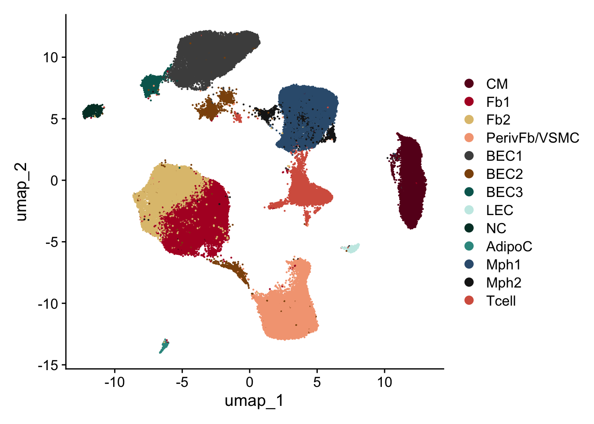
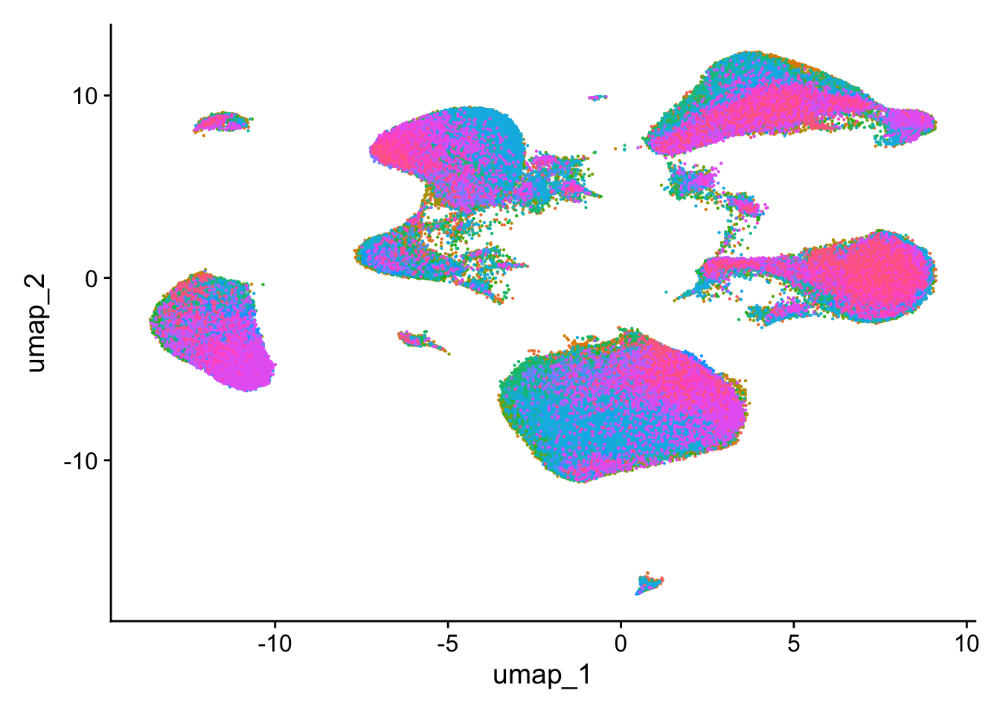
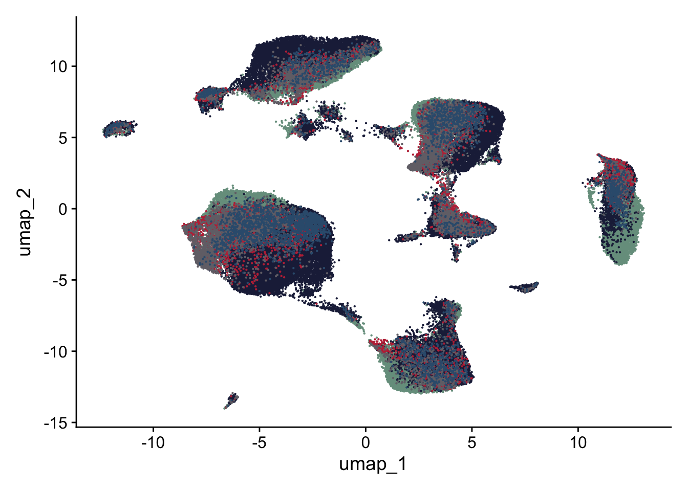
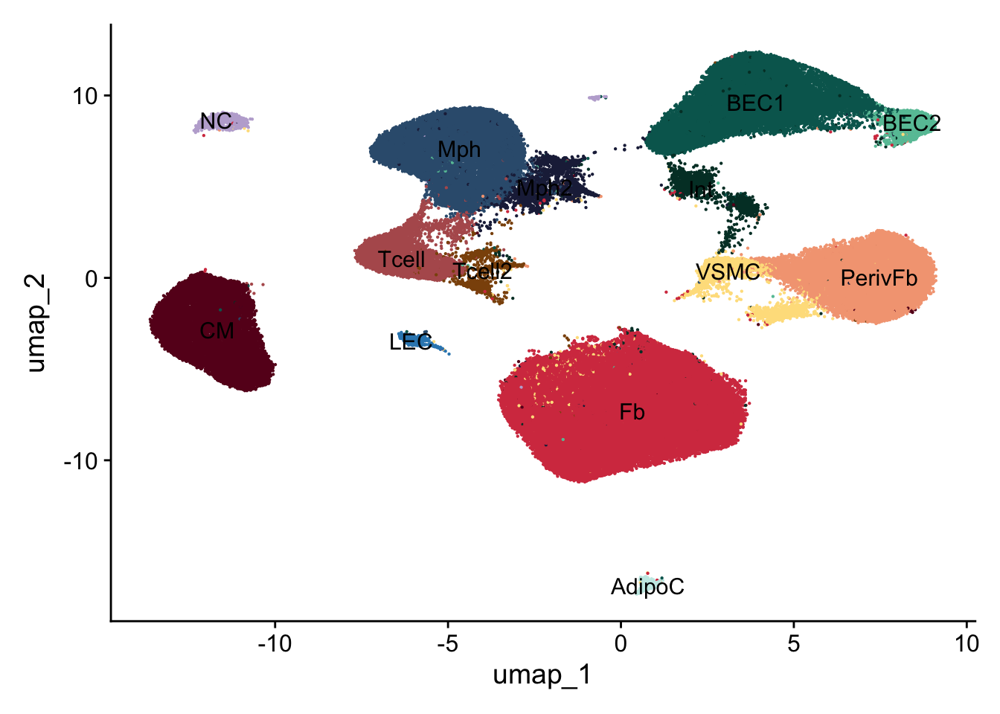
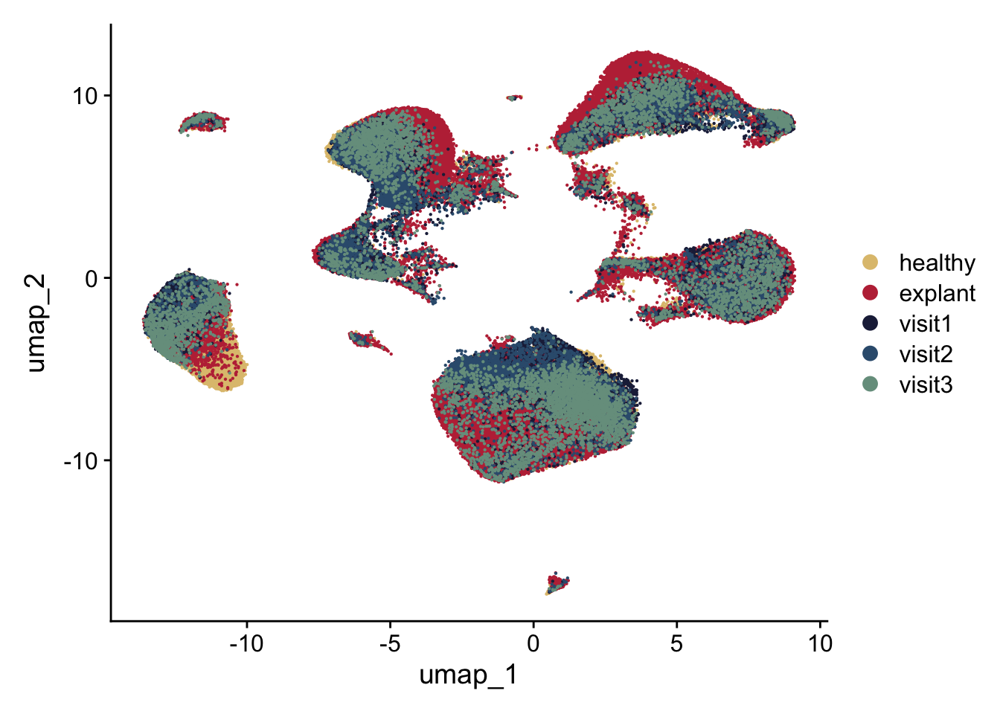
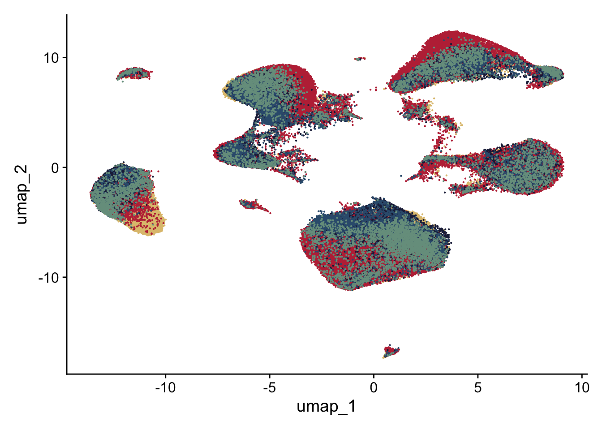
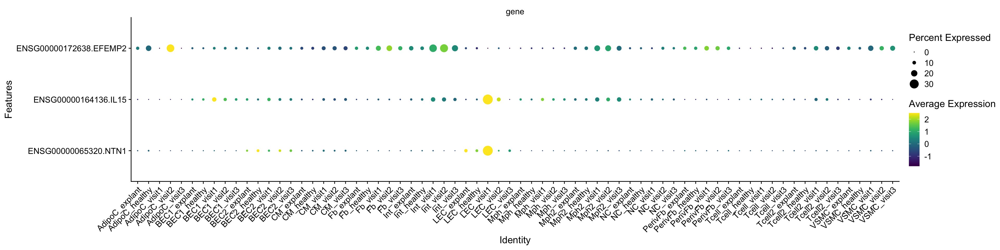

HumanHeartCarTrans
A.DeMartin
2024-02-21
Last updated: 2024-09-03
Checks: 5 2
Knit directory: HumanHeartCarTrans/
This reproducible R Markdown analysis was created with workflowr (version 1.7.1). The Checks tab describes the reproducibility checks that were applied when the results were created. The Past versions tab lists the development history.
The R Markdown file has unstaged changes. To know which version of
the R Markdown file created these results, you’ll want to first commit
it to the Git repo. If you’re still working on the analysis, you can
ignore this warning. When you’re finished, you can run
wflow_publish to commit the R Markdown file and build the
HTML.
Great job! The global environment was empty. Objects defined in the global environment can affect the analysis in your R Markdown file in unknown ways. For reproduciblity it’s best to always run the code in an empty environment.
The command set.seed(20240221) was run prior to running
the code in the R Markdown file. Setting a seed ensures that any results
that rely on randomness, e.g. subsampling or permutations, are
reproducible.
Great job! Recording the operating system, R version, and package versions is critical for reproducibility.
Nice! There were no cached chunks for this analysis, so you can be confident that you successfully produced the results during this run.
Using absolute paths to the files within your workflowr project makes it difficult for you and others to run your code on a different machine. Change the absolute path(s) below to the suggested relative path(s) to make your code more reproducible.
| absolute | relative |
|---|---|
| /Users/immbio/Desktop/Project/Angelina/HumanHeartCarTrans/data/seurat files/ | data/seurat files |
| /Users/immbio/Desktop/Project/Angelina/HumanHeartCarTrans/data/Human_heart_allmerged_seurat.rds | data/Human_heart_allmerged_seurat.rds |
Great! You are using Git for version control. Tracking code development and connecting the code version to the results is critical for reproducibility.
The results in this page were generated with repository version 6ec9eda. See the Past versions tab to see a history of the changes made to the R Markdown and HTML files.
Note that you need to be careful to ensure that all relevant files for
the analysis have been committed to Git prior to generating the results
(you can use wflow_publish or
wflow_git_commit). workflowr only checks the R Markdown
file, but you know if there are other scripts or data files that it
depends on. Below is the status of the Git repository when the results
were generated:
Ignored files:
Ignored: .DS_Store
Ignored: .Rhistory
Ignored: .Rproj.user/
Ignored: analysis/.DS_Store
Ignored: analysis/.Rhistory
Ignored: data/seurat files/
Unstaged changes:
Modified: analysis/HumanHeartCarTrans.Rmd
Note that any generated files, e.g. HTML, png, CSS, etc., are not included in this status report because it is ok for generated content to have uncommitted changes.
These are the previous versions of the repository in which changes were
made to the R Markdown (analysis/HumanHeartCarTrans.Rmd)
and HTML (docs/HumanHeartCarTrans.html) files. If you’ve
configured a remote Git repository (see ?wflow_git_remote),
click on the hyperlinks in the table below to view the files as they
were in that past version.
| File | Version | Author | Date | Message |
|---|---|---|---|---|
| Rmd | 6ec9eda | angeldemartin | 2024-09-03 | Sept24 |
| html | 6ec9eda | angeldemartin | 2024-09-03 | Sept24 |
| html | a155827 | angeldemartin | 2024-03-02 | update march2-2 |
| Rmd | 703f7d9 | angeldemartin | 2024-03-02 | update march3 |
| html | 703f7d9 | angeldemartin | 2024-03-02 | update march3 |
| html | 57d61d1 | angeldemartin | 2024-02-29 | update website |
| Rmd | fe192c5 | angeldemartin | 2024-02-29 | update website |
| Rmd | 3b7da72 | angeldemartin | 2024-02-23 | update gitignore |
| html | 3b7da72 | angeldemartin | 2024-02-23 | update gitignore |
load packages
##############################start pre-processing##############################
load files and merge
### load and merge all
basedir <- "/Users/immbio/Desktop/Project/Angelina/HumanHeartCarTrans/data/seurat files/"
fileNamList <- list.files(path = basedir)
for(i in 1:length(fileNamList)){
seuratS <- readRDS(paste0(basedir, fileNamList[i]))
if(exists("seuratM")){
seuratM <- merge(x = seuratM, y = seuratS)
}else{
seuratM <- seuratS
}
}
remove(seuratS)
table(seuratM$dataset)
table(seuratM$orig.ident)
## exclude patient_9 ("347741_1-1_20240326_Hu_nucseq_USZ_HTx009_RV", "347741_2-2_20240326_Hu_nucseq_USZ_HTx009_LV")
## exclude "o28576_1_09-9_20220525_Hu_nucseq_Graz_9_HH_GEM" (separate CM cluster)
## exclude visit 4 sample: 347741_3-3_20240326_Hu_nucseq_USZ_EMB002_V4_inf
seuratMfilt <- subset(seuratM, dataset %in% c("o28576_1_09-9_20220525_Hu_nucseq_Graz_9_HH_GEM", "347741_1-1_20240326_Hu_nucseq_USZ_HTx009_RV", "347741_2-2_20240326_Hu_nucseq_USZ_HTx009_LV", "347741_3-3_20240326_Hu_nucseq_USZ_EMB002_V4_inf"), invert = T)
unique(seuratMfilt$dataset)
table(seuratMfilt$dataset)
table(seuratMfilt$orig.ident)
seuratM <- seuratMfilt
remove(seuratMfilt)
table(seuratM$orig.ident)
#rerun seurat
seuratM <- NormalizeData (object = seuratM)
seuratM <- FindVariableFeatures(object = seuratM)
seuratM <- ScaleData(object = seuratM, verbose = TRUE)
seuratM <- RunPCA(object=seuratM, npcs = 30, verbose = FALSE)
#seuratM <- RunTSNE(object=seuratM, reduction="pca", dims = 1:20)
seuratM <- RunUMAP(object=seuratM, reduction="pca", dims = 1:20)
seuratM <- FindNeighbors(object = seuratM, reduction = "pca", dims= 1:20)
res <- c(0.25, 0.6, 0.8, 0.4)
for (i in 1:length(res)) {
seuratM <- FindClusters(object = seuratM, resolution = res[i], random.seed = 1234)
}### save seurat object
saveRDS(seuratM, file="/Users/immbio/Desktop/Project/Angelina/HumanHeartCarTrans/data/Human_heart_allmerged_seurat.rds")##############################end pre-processing##############################
load file
##load merged file
fileNam <- "/Users/immbio/Desktop/Project/Angelina/HumanHeartCarTrans/data/Human_heart_allmerged_seurat.rds"
seuratM <- readRDS(fileNam)
table(seuratM$dataset)
331571_3-5_20231012_Hu_nucseq_USZ_HTx001 331571_4-6_20231012_Hu_nucseq_USZ_HTx002
2934 2059
334131_01-1_20231103_Hu_nucseq_USZ_HTx002_RV 334131_02-2_20231103_Hu_nucseq_USZ_HTx003_LV
3718 3905
334131_03-3_20231103_Hu_nucseq_USZ_HTx004_RV 334131_04-4_20231106_Hu_nucseq_USZ_HTx003_RV
3377 3377
334131_05-5_20231106_Hu_nucseq_USZ_HTx004_LV 334131_06-6_20231106_Hu_nucseq_USZ_HTx005_RV
4861 2694
334131_07-7_20231107_Hu_nucseq_USZ_HTx005_LV 334131_08-8_20231107_Hu_nucseq_USZ_HTx006_RV
1739 1672
334131_09-9_20231108_Hu_nucseq_USZ_HTx006_LV 334131_10-10_20231108_Hu_nucseq_USZ_HTx001_RV
3101 1901
336431_07-7_20231129_Hu_nucseq_USZ_HTx008_RV 336431_08-8_20231129_Hu_nucseq_USZ_EMB001_V1
3679 483
336431_09-9_20231129_Hu_nucseq_USZ_HTx008_LV 336431_10-10_20231129_Hu_nucseq_USZ_EMB005_V1
3082 606
336431_11-11_20231129_Hu_nucseq_USZ_EMB006_V1 336431_12-12_20231129_Hu_nucseq_USZ_EMB007_V1
420 1326
336431_13-13_20231129_Hu_nucseq_USZ_EMB002_V1 336431_14-14_20231129_Hu_nucseq_USZ_EMB003_V1
1338 1362
336431_15-15_20231129_Hu_nucseq_USZ_EMB004_V1 340821_01-7_20240118_Hu_nucseq_USZ_EMB007_V2
986 1600
340821_02-8_20240118_Hu_nucseq_USZ_EMB008_V2 340821_03-9_20240123_Hu_nucseq_USZ_EMB001_V3
567 68
340821_04-10_20240123_Hu_nucseq_USZ_EMB002_V3 340821_05-11_20240123_Hu_nucseq_USZ_EMB003_V3
349 196
340821_06-12_20240123_Hu_nucseq_USZ_EMB004_V3 340821_07-13_20240123_Hu_nucseq_USZ_EMB005_V3
745 1896
340821_08-14_20240123_Hu_nucseq_USZ_EMB006_V3 340821_09-15_20240123_Hu_nucseq_USZ_EMB007_V3
230 361
340821_10-16_20240123_Hu_nucseq_USZ_EMB008_V3 340821_11-17_20240123_Hu_nucseq_USZ_EMB008_V1
194 56
340821_12-18_20240123_Hu_nucseq_USZ_HTx007_RV 340821_13-19_20240123_Hu_nucseq_USZ_HTx007_LV
2352 2148
340831_1-1_20240118_Hu_nucseq_USZ_EMB001_V2 340831_2-2_20240118_Hu_nucseq_USZ_EMB002_V2
804 2575
340831_3-3_20240118_Hu_nucseq_USZ_EMB003_V2 340831_4-4_20240118_Hu_nucseq_USZ_EMB004_V2
323 521
340831_5-5_20240118_Hu_nucseq_USZ_EMB005_V2 340831_6-6_20240118_Hu_nucseq_USZ_EMB006_V2
654 770
347741_4-4_20240326_Hu_nucseq_USZ_HTx010_RV 347741_5-5_20240326_Hu_nucseq_USZ_HTx010_LV
2034 3004
353921_01-1_20240515_Hu_nucseq_USZ_HTx011_RV 353921_02-2_20240515_Hu_nucseq_USZ_HTx011_LV
1846 1351
353921_03-3_20240515_Hu_nucseq_USZ_EMB011_V1 353921_04-4_20240515_Hu_nucseq_USZ_EMB011_V2
738 193
353921_05-5_20240515_Hu_nucseq_USZ_HTx012_RV 353921_06-6_20240515_Hu_nucseq_USZ_HTx012_LV
1101 2666
353921_07-7_20240515_Hu_nucseq_USZ_EMB012_V1 353921_08-8_20240515_Hu_nucseq_USZ_EMB010_V3
715 677
353921_09-9_20240515_Hu_nucseq_USZ_HTx013_RV 353921_10-10_20240515_Hu_nucseq_USZ_HTx013_LV
1715 1965
353921_11-11_20240515_Hu_nucseq_USZ_EMB010_V1_1 353921_12-12_20240515_Hu_nucseq_USZ_EMB010_V1_2
996 265
353921_13-13_20240524_Hu_nucseq_USZ_HTx015_RV 353921_14-14_20240524_Hu_nucseq_USZ_EMB011_V3
1745 623
353921_15-15_20240524_Hu_nucseq_USZ_EMB012_V2 353921_16-16_20240524_Hu_nucseq_USZ_EMB012_V3
1547 1846
353921_17-17_20240524_Hu_nucseq_USZ_HTx015_LV 353921_18-18_20240524_Hu_nucseq_USZ_EMB013_V1
1448 379
353921_19-19_20240524_Hu_nucseq_USZ_EMB013_V2 353921_20-20_20240524_Hu_nucseq_USZ_EMB013_V3
138 327
353921_21-21_20240524_Hu_nucseq_USZ_HTx014_RV 353921_22-22_20240524_Hu_nucseq_USZ_HTx014_LV
2348 2337
353921_23-23_20240524_Hu_nucseq_USZ_EMB014_V1 353921_24-24_20240524_Hu_nucseq_USZ_EMB014_V2
866 311
359861_01-1_20240715_Hu_nucseq_USZ_HTx016_LV 359861_02-2_20240715_Hu_nucseq_USZ_HTx016_RV
5034 7278
359861_03-3_20240715_Hu_nucseq_USZ_EMB014_V3 359861_04-4_20240715_Hu_nucseq_USZ_EMB015_V1
395 134
359861_05-5_20240715_Hu_nucseq_USZ_EMB015_V2 359861_06-6_20240715_Hu_nucseq_USZ_EMB015_V3
207 449
359861_07-7_20240715_Hu_nucseq_USZ_EMB016_V1 359861_08-8_20240715_Hu_nucseq_USZ_EMB016_V2
547 94
359861_18-10_20240730_Hu_nucseq_USZ_EMB016_V3 o28576_1_08-8_20220525_Hu_nucseq_Graz_8_HH_GEM
287 3921
o28576_1_10-10_20220525_Hu_nucseq_Graz_10_HH_GEM o28576_1_11-11_20220525_Hu_nucseq_Graz_11_HH_GEM
3731 3991
o28576_1_12-12_20220525_Hu_nucseq_Graz_12_HH_GEM o292731_1-1_20220818_Hu_nucseq_Graz_9_HH_GEM
3818 4908
o292731_2-2_20220818_Hu_nucseq_Graz_13_HH_GEM o294781_01-1_20220912_Hu_nucseq_Graz_21_HH_GEM
9882 1442
o294781_02-2_20220912_Hu_nucseq_Graz_22_HH_GEM o294781_03-3_20220912_Hu_nucseq_Graz_23_HH_GEM
1998 841
o294781_04-4_20220912_Hu_nucseq_Graz_24_HH_GEM
1480 table(seuratM$RNA_snn_res.0.25)
0 1 2 3 4 5 6 7 8 9 10 11 12 13
50676 24558 22350 16898 12792 6349 3418 2478 2458 2167 1844 1087 884 688 table(seuratM$orig.ident)
148647 ### add any type of metadata
### patient
pat_1 <- c("331571_3-5_20231012_Hu_nucseq_USZ_HTx001","334131_10-10_20231108_Hu_nucseq_USZ_HTx001_RV","336431_08-8_20231129_Hu_nucseq_USZ_EMB001_V1", "340831_1-1_20240118_Hu_nucseq_USZ_EMB001_V2", "340821_03-9_20240123_Hu_nucseq_USZ_EMB001_V3")
pat_2 <- c("331571_4-6_20231012_Hu_nucseq_USZ_HTx002","334131_01-1_20231103_Hu_nucseq_USZ_HTx002_RV","336431_13-13_20231129_Hu_nucseq_USZ_EMB002_V1", "340831_2-2_20240118_Hu_nucseq_USZ_EMB002_V2", "340821_04-10_20240123_Hu_nucseq_USZ_EMB002_V3", "347741_3-3_20240326_Hu_nucseq_USZ_EMB002_V4_inf")
pat_3 <- c("334131_02-2_20231103_Hu_nucseq_USZ_HTx003_LV","334131_04-4_20231106_Hu_nucseq_USZ_HTx003_RV","336431_14-14_20231129_Hu_nucseq_USZ_EMB003_V1","340831_3-3_20240118_Hu_nucseq_USZ_EMB003_V2","340821_05-11_20240123_Hu_nucseq_USZ_EMB003_V3")
pat_4 <- c("334131_05-5_20231106_Hu_nucseq_USZ_HTx004_LV","334131_03-3_20231103_Hu_nucseq_USZ_HTx004_RV","336431_15-15_20231129_Hu_nucseq_USZ_EMB004_V1", "340831_4-4_20240118_Hu_nucseq_USZ_EMB004_V2" ,"340821_06-12_20240123_Hu_nucseq_USZ_EMB004_V3")
pat_5 <- c("334131_07-7_20231107_Hu_nucseq_USZ_HTx005_LV","334131_06-6_20231106_Hu_nucseq_USZ_HTx005_RV","336431_10-10_20231129_Hu_nucseq_USZ_EMB005_V1","340831_5-5_20240118_Hu_nucseq_USZ_EMB005_V2" ,"340821_07-13_20240123_Hu_nucseq_USZ_EMB005_V3")
pat_6 <- c("334131_09-9_20231108_Hu_nucseq_USZ_HTx006_LV","334131_08-8_20231107_Hu_nucseq_USZ_HTx006_RV","336431_11-11_20231129_Hu_nucseq_USZ_EMB006_V1", "340831_6-6_20240118_Hu_nucseq_USZ_EMB006_V2", "340821_08-14_20240123_Hu_nucseq_USZ_EMB006_V3")
pat_7 <- c("340821_13-19_20240123_Hu_nucseq_USZ_HTx007_LV","340821_12-18_20240123_Hu_nucseq_USZ_HTx007_RV","336431_12-12_20231129_Hu_nucseq_USZ_EMB007_V1","340821_01-7_20240118_Hu_nucseq_USZ_EMB007_V2","340821_09-15_20240123_Hu_nucseq_USZ_EMB007_V3")
pat_8 <- c("336431_07-7_20231129_Hu_nucseq_USZ_HTx008_RV","336431_09-9_20231129_Hu_nucseq_USZ_HTx008_LV","340821_11-17_20240123_Hu_nucseq_USZ_EMB008_V1", "340821_02-8_20240118_Hu_nucseq_USZ_EMB008_V2", "340821_10-16_20240123_Hu_nucseq_USZ_EMB008_V3")
### excluded - pat_9 <- c("347741_1-1_20240326_Hu_nucseq_USZ_HTx009_RV", "347741_2-2_20240326_Hu_nucseq_USZ_HTx009_LV")
pat_10 <- c("347741_4-4_20240326_Hu_nucseq_USZ_HTx010_RV","347741_5-5_20240326_Hu_nucseq_USZ_HTx010_LV","353921_11-11_20240515_Hu_nucseq_USZ_EMB010_V1_1","353921_12-12_20240515_Hu_nucseq_USZ_EMB010_V1_2","353921_08-8_20240515_Hu_nucseq_USZ_EMB010_V3")
pat_11 <- c("353921_01-1_20240515_Hu_nucseq_USZ_HTx011_RV","353921_02-2_20240515_Hu_nucseq_USZ_HTx011_LV", "353921_03-3_20240515_Hu_nucseq_USZ_EMB011_V1", "353921_04-4_20240515_Hu_nucseq_USZ_EMB011_V2","353921_14-14_20240524_Hu_nucseq_USZ_EMB011_V3")
pat_12 <- c("353921_05-5_20240515_Hu_nucseq_USZ_HTx012_RV","353921_06-6_20240515_Hu_nucseq_USZ_HTx012_LV", "353921_07-7_20240515_Hu_nucseq_USZ_EMB012_V1","353921_15-15_20240524_Hu_nucseq_USZ_EMB012_V2","353921_16-16_20240524_Hu_nucseq_USZ_EMB012_V3")
pat_13 <- c("353921_09-9_20240515_Hu_nucseq_USZ_HTx013_RV","353921_10-10_20240515_Hu_nucseq_USZ_HTx013_LV", "353921_18-18_20240524_Hu_nucseq_USZ_EMB013_V1","353921_19-19_20240524_Hu_nucseq_USZ_EMB013_V2","353921_20-20_20240524_Hu_nucseq_USZ_EMB013_V3")
pat_14 <- c("353921_21-21_20240524_Hu_nucseq_USZ_HTx014_RV","353921_22-22_20240524_Hu_nucseq_USZ_HTx014_LV","353921_23-23_20240524_Hu_nucseq_USZ_EMB014_V1","353921_24-24_20240524_Hu_nucseq_USZ_EMB014_V2", "359861_03-3_20240715_Hu_nucseq_USZ_EMB014_V3")
pat_15 <- c("353921_13-13_20240524_Hu_nucseq_USZ_HTx015_RV","353921_17-17_20240524_Hu_nucseq_USZ_HTx015_LV","359861_04-4_20240715_Hu_nucseq_USZ_EMB015_V1","359861_05-5_20240715_Hu_nucseq_USZ_EMB015_V2","359861_06-6_20240715_Hu_nucseq_USZ_EMB015_V3")
pat_16 <- c("359861_02-2_20240715_Hu_nucseq_USZ_HTx016_RV","359861_01-1_20240715_Hu_nucseq_USZ_HTx016_LV","359861_07-7_20240715_Hu_nucseq_USZ_EMB016_V1","359861_08-8_20240715_Hu_nucseq_USZ_EMB016_V2","359861_18-10_20240730_Hu_nucseq_USZ_EMB016_V3")
HH_1 <- c("o28576_1_08-8_20220525_Hu_nucseq_Graz_8_HH_GEM")
### excluded - CM cluster separately### HH_2 <- c("o28576_1_09-9_20220525_Hu_nucseq_Graz_9_HH_GEM")
HH_3 <- c("o28576_1_10-10_20220525_Hu_nucseq_Graz_10_HH_GEM")
HH_4 <- c("o28576_1_11-11_20220525_Hu_nucseq_Graz_11_HH_GEM")
HH_5 <- c("o28576_1_12-12_20220525_Hu_nucseq_Graz_12_HH_GEM")
HH_6 <- c("o292731_1-1_20220818_Hu_nucseq_Graz_9_HH_GEM")
HH_7 <- c("o292731_2-2_20220818_Hu_nucseq_Graz_13_HH_GEM")
HH_8 <- c("o294781_01-1_20220912_Hu_nucseq_Graz_21_HH_GEM")
HH_9 <- c("o294781_02-2_20220912_Hu_nucseq_Graz_22_HH_GEM")
HH_10 <- c("o294781_03-3_20220912_Hu_nucseq_Graz_23_HH_GEM")
HH_11 <- c("o294781_04-4_20220912_Hu_nucseq_Graz_24_HH_GEM")
seuratM$patient <- "pat_nr"
seuratM$patient[which(seuratM$dataset %in% pat_1)] <- "CarTransPat1"
seuratM$patient[which(seuratM$dataset %in% pat_2)] <- "CarTransPat2"
seuratM$patient[which(seuratM$dataset %in% pat_3)] <- "CarTransPat3"
seuratM$patient[which(seuratM$dataset %in% pat_4)] <- "CarTransPat4"
seuratM$patient[which(seuratM$dataset %in% pat_5)] <- "CarTransPat5"
seuratM$patient[which(seuratM$dataset %in% pat_6)] <- "CarTransPat6"
seuratM$patient[which(seuratM$dataset %in% pat_7)] <- "CarTransPat7"
seuratM$patient[which(seuratM$dataset %in% pat_8)] <- "CarTransPat8"
### seuratM$patient[which(seuratM$dataset %in% pat_9)] <- "CarTransPat9"
seuratM$patient[which(seuratM$dataset %in% pat_10)] <- "CarTransPat10"
seuratM$patient[which(seuratM$dataset %in% pat_11)] <- "CarTransPat11"
seuratM$patient[which(seuratM$dataset %in% pat_12)] <- "CarTransPat12"
seuratM$patient[which(seuratM$dataset %in% pat_13)] <- "CarTransPat13"
seuratM$patient[which(seuratM$dataset %in% pat_14)] <- "CarTransPat14"
seuratM$patient[which(seuratM$dataset %in% pat_15)] <- "CarTransPat15"
seuratM$patient[which(seuratM$dataset %in% pat_16)] <- "CarTransPat16"
seuratM$patient[which(seuratM$dataset %in% HH_1)] <- "HH1"
seuratM$patient[which(seuratM$dataset %in% HH_3)] <- "HH3"
seuratM$patient[which(seuratM$dataset %in% HH_4)] <- "HH4"
seuratM$patient[which(seuratM$dataset %in% HH_5)] <- "HH5"
seuratM$patient[which(seuratM$dataset %in% HH_6)] <- "HH6"
seuratM$patient[which(seuratM$dataset %in% HH_7)] <- "HH7"
seuratM$patient[which(seuratM$dataset %in% HH_8)] <- "HH8"
seuratM$patient[which(seuratM$dataset %in% HH_9)] <- "HH9"
seuratM$patient[which(seuratM$dataset %in% HH_10)] <- "HH10"
seuratM$patient[which(seuratM$dataset %in% HH_11)] <- "HH2"
table(seuratM$patient)
CarTransPat1 CarTransPat10 CarTransPat11 CarTransPat12 CarTransPat13 CarTransPat14 CarTransPat15
6190 6976 4751 7875 4524 6257 3983
CarTransPat16 CarTransPat2 CarTransPat3 CarTransPat4 CarTransPat5 CarTransPat6 CarTransPat7
13240 10039 9163 10490 7589 6193 7787
CarTransPat8 HH1 HH10 HH2 HH3 HH4 HH5
7578 3921 841 1480 3731 3991 3818
HH6 HH7 HH8 HH9
4908 9882 1442 1998 orddatasets <- c("o28576_1_08-8_20220525_Hu_nucseq_Graz_8_HH_GEM","o28576_1_10-10_20220525_Hu_nucseq_Graz_10_HH_GEM","o28576_1_11-11_20220525_Hu_nucseq_Graz_11_HH_GEM","o28576_1_12-12_20220525_Hu_nucseq_Graz_12_HH_GEM","o292731_1-1_20220818_Hu_nucseq_Graz_9_HH_GEM","o292731_2-2_20220818_Hu_nucseq_Graz_13_HH_GEM","o294781_01-1_20220912_Hu_nucseq_Graz_21_HH_GEM","o294781_02-2_20220912_Hu_nucseq_Graz_22_HH_GEM","o294781_03-3_20220912_Hu_nucseq_Graz_23_HH_GEM","o294781_04-4_20220912_Hu_nucseq_Graz_24_HH_GEM",
"334131_10-10_20231108_Hu_nucseq_USZ_HTx001_RV","331571_3-5_20231012_Hu_nucseq_USZ_HTx001",
"334131_01-1_20231103_Hu_nucseq_USZ_HTx002_RV","331571_4-6_20231012_Hu_nucseq_USZ_HTx002",
"334131_04-4_20231106_Hu_nucseq_USZ_HTx003_RV","334131_02-2_20231103_Hu_nucseq_USZ_HTx003_LV",
"334131_03-3_20231103_Hu_nucseq_USZ_HTx004_RV","334131_05-5_20231106_Hu_nucseq_USZ_HTx004_LV",
"334131_06-6_20231106_Hu_nucseq_USZ_HTx005_RV","334131_07-7_20231107_Hu_nucseq_USZ_HTx005_LV",
"334131_08-8_20231107_Hu_nucseq_USZ_HTx006_RV","334131_09-9_20231108_Hu_nucseq_USZ_HTx006_LV",
"340821_12-18_20240123_Hu_nucseq_USZ_HTx007_RV","340821_13-19_20240123_Hu_nucseq_USZ_HTx007_LV",
"336431_07-7_20231129_Hu_nucseq_USZ_HTx008_RV","336431_09-9_20231129_Hu_nucseq_USZ_HTx008_LV",
"347741_4-4_20240326_Hu_nucseq_USZ_HTx010_RV","347741_5-5_20240326_Hu_nucseq_USZ_HTx010_LV",
"353921_01-1_20240515_Hu_nucseq_USZ_HTx011_RV","353921_02-2_20240515_Hu_nucseq_USZ_HTx011_LV",
"353921_05-5_20240515_Hu_nucseq_USZ_HTx012_RV","353921_06-6_20240515_Hu_nucseq_USZ_HTx012_LV",
"353921_09-9_20240515_Hu_nucseq_USZ_HTx013_RV","353921_10-10_20240515_Hu_nucseq_USZ_HTx013_LV",
"353921_21-21_20240524_Hu_nucseq_USZ_HTx014_RV","353921_22-22_20240524_Hu_nucseq_USZ_HTx014_LV",
"353921_13-13_20240524_Hu_nucseq_USZ_HTx015_RV", "353921_17-17_20240524_Hu_nucseq_USZ_HTx015_LV",
"359861_02-2_20240715_Hu_nucseq_USZ_HTx016_RV","359861_01-1_20240715_Hu_nucseq_USZ_HTx016_LV",
"336431_08-8_20231129_Hu_nucseq_USZ_EMB001_V1","340831_1-1_20240118_Hu_nucseq_USZ_EMB001_V2","340821_03-9_20240123_Hu_nucseq_USZ_EMB001_V3",
"336431_13-13_20231129_Hu_nucseq_USZ_EMB002_V1","340831_2-2_20240118_Hu_nucseq_USZ_EMB002_V2","340821_04-10_20240123_Hu_nucseq_USZ_EMB002_V3",
"336431_14-14_20231129_Hu_nucseq_USZ_EMB003_V1","340831_3-3_20240118_Hu_nucseq_USZ_EMB003_V2","340821_05-11_20240123_Hu_nucseq_USZ_EMB003_V3",
"336431_15-15_20231129_Hu_nucseq_USZ_EMB004_V1","340831_4-4_20240118_Hu_nucseq_USZ_EMB004_V2","340821_06-12_20240123_Hu_nucseq_USZ_EMB004_V3",
"336431_10-10_20231129_Hu_nucseq_USZ_EMB005_V1","340831_5-5_20240118_Hu_nucseq_USZ_EMB005_V2","340821_07-13_20240123_Hu_nucseq_USZ_EMB005_V3",
"336431_11-11_20231129_Hu_nucseq_USZ_EMB006_V1","340831_6-6_20240118_Hu_nucseq_USZ_EMB006_V2","340821_08-14_20240123_Hu_nucseq_USZ_EMB006_V3",
"336431_12-12_20231129_Hu_nucseq_USZ_EMB007_V1","340821_01-7_20240118_Hu_nucseq_USZ_EMB007_V2","340821_09-15_20240123_Hu_nucseq_USZ_EMB007_V3",
"340821_11-17_20240123_Hu_nucseq_USZ_EMB008_V1","340821_02-8_20240118_Hu_nucseq_USZ_EMB008_V2","340821_10-16_20240123_Hu_nucseq_USZ_EMB008_V3",
"353921_11-11_20240515_Hu_nucseq_USZ_EMB010_V1_1","353921_12-12_20240515_Hu_nucseq_USZ_EMB010_V1_2","353921_08-8_20240515_Hu_nucseq_USZ_EMB010_V3", "353921_03-3_20240515_Hu_nucseq_USZ_EMB011_V1","353921_04-4_20240515_Hu_nucseq_USZ_EMB011_V2","353921_14-14_20240524_Hu_nucseq_USZ_EMB011_V3", "353921_07-7_20240515_Hu_nucseq_USZ_EMB012_V1","353921_15-15_20240524_Hu_nucseq_USZ_EMB012_V2","353921_16-16_20240524_Hu_nucseq_USZ_EMB012_V3", "353921_18-18_20240524_Hu_nucseq_USZ_EMB013_V1","353921_19-19_20240524_Hu_nucseq_USZ_EMB013_V2","353921_20-20_20240524_Hu_nucseq_USZ_EMB013_V3",
"353921_23-23_20240524_Hu_nucseq_USZ_EMB014_V1","353921_24-24_20240524_Hu_nucseq_USZ_EMB014_V2", "359861_03-3_20240715_Hu_nucseq_USZ_EMB014_V3",
"359861_04-4_20240715_Hu_nucseq_USZ_EMB015_V1","359861_05-5_20240715_Hu_nucseq_USZ_EMB015_V2","359861_06-6_20240715_Hu_nucseq_USZ_EMB015_V3",
"359861_07-7_20240715_Hu_nucseq_USZ_EMB016_V1","359861_08-8_20240715_Hu_nucseq_USZ_EMB016_V2","359861_18-10_20240730_Hu_nucseq_USZ_EMB016_V3")
#### diseaseCondSp and diseaseCond
#healthy
healthy <- c("o28576_1_08-8_20220525_Hu_nucseq_Graz_8_HH_GEM","o28576_1_10-10_20220525_Hu_nucseq_Graz_10_HH_GEM","o28576_1_11-11_20220525_Hu_nucseq_Graz_11_HH_GEM", "o28576_1_12-12_20220525_Hu_nucseq_Graz_12_HH_GEM","o292731_1-1_20220818_Hu_nucseq_Graz_9_HH_GEM","o292731_2-2_20220818_Hu_nucseq_Graz_13_HH_GEM", "o294781_01-1_20220912_Hu_nucseq_Graz_21_HH_GEM", "o294781_02-2_20220912_Hu_nucseq_Graz_22_HH_GEM", "o294781_03-3_20220912_Hu_nucseq_Graz_23_HH_GEM", "o294781_04-4_20220912_Hu_nucseq_Graz_24_HH_GEM")
#Giant cell myocarditis
GCM <- c("331571_3-5_20231012_Hu_nucseq_USZ_HTx001","334131_10-10_20231108_Hu_nucseq_USZ_HTx001_RV")
#Dilated Cardiomyopathy
DCM <- c("334131_02-2_20231103_Hu_nucseq_USZ_HTx003_LV","334131_04-4_20231106_Hu_nucseq_USZ_HTx003_RV", "334131_05-5_20231106_Hu_nucseq_USZ_HTx004_LV","334131_03-3_20231103_Hu_nucseq_USZ_HTx004_RV", "334131_07-7_20231107_Hu_nucseq_USZ_HTx005_LV","334131_06-6_20231106_Hu_nucseq_USZ_HTx005_RV", "334131_09-9_20231108_Hu_nucseq_USZ_HTx006_LV","334131_08-8_20231107_Hu_nucseq_USZ_HTx006_RV",
"340821_13-19_20240123_Hu_nucseq_USZ_HTx007_LV","340821_12-18_20240123_Hu_nucseq_USZ_HTx007_RV",
"347741_4-4_20240326_Hu_nucseq_USZ_HTx010_RV","347741_5-5_20240326_Hu_nucseq_USZ_HTx010_LV",
"353921_01-1_20240515_Hu_nucseq_USZ_HTx011_RV","353921_02-2_20240515_Hu_nucseq_USZ_HTx011_LV",
"353921_21-21_20240524_Hu_nucseq_USZ_HTx014_RV","353921_22-22_20240524_Hu_nucseq_USZ_HTx014_LV",
"359861_02-2_20240715_Hu_nucseq_USZ_HTx016_RV","359861_01-1_20240715_Hu_nucseq_USZ_HTx016_LV")
#LoefflerEndocarditis
LoeEndoc <- c("331571_4-6_20231012_Hu_nucseq_USZ_HTx002","334131_01-1_20231103_Hu_nucseq_USZ_HTx002_RV")
#hypertrophic cardiomyopathy (non-obstructive)
HCM <- c("336431_07-7_20231129_Hu_nucseq_USZ_HTx008_RV","336431_09-9_20231129_Hu_nucseq_USZ_HTx008_LV")
#Ischemic cardiomyopathy
ICM <- c("353921_05-5_20240515_Hu_nucseq_USZ_HTx012_RV","353921_06-6_20240515_Hu_nucseq_USZ_HTx012_LV","353921_09-9_20240515_Hu_nucseq_USZ_HTx013_RV","353921_10-10_20240515_Hu_nucseq_USZ_HTx013_LV","353921_13-13_20240524_Hu_nucseq_USZ_HTx015_RV", "353921_17-17_20240524_Hu_nucseq_USZ_HTx015_LV")
#EMBs of transplanted hearts
visit1 <- c("336431_08-8_20231129_Hu_nucseq_USZ_EMB001_V1","336431_13-13_20231129_Hu_nucseq_USZ_EMB002_V1","336431_14-14_20231129_Hu_nucseq_USZ_EMB003_V1","336431_15-15_20231129_Hu_nucseq_USZ_EMB004_V1","336431_10-10_20231129_Hu_nucseq_USZ_EMB005_V1","336431_11-11_20231129_Hu_nucseq_USZ_EMB006_V1", "336431_12-12_20231129_Hu_nucseq_USZ_EMB007_V1","340821_11-17_20240123_Hu_nucseq_USZ_EMB008_V1","353921_11-11_20240515_Hu_nucseq_USZ_EMB010_V1_1","353921_03-3_20240515_Hu_nucseq_USZ_EMB011_V1","353921_07-7_20240515_Hu_nucseq_USZ_EMB012_V1","353921_18-18_20240524_Hu_nucseq_USZ_EMB013_V1","353921_23-23_20240524_Hu_nucseq_USZ_EMB014_V1","359861_04-4_20240715_Hu_nucseq_USZ_EMB015_V1","359861_07-7_20240715_Hu_nucseq_USZ_EMB016_V1")
visit2 <- c("340831_1-1_20240118_Hu_nucseq_USZ_EMB001_V2","340831_2-2_20240118_Hu_nucseq_USZ_EMB002_V2","340831_3-3_20240118_Hu_nucseq_USZ_EMB003_V2","340831_4-4_20240118_Hu_nucseq_USZ_EMB004_V2","340831_5-5_20240118_Hu_nucseq_USZ_EMB005_V2","340831_6-6_20240118_Hu_nucseq_USZ_EMB006_V2","340821_01-7_20240118_Hu_nucseq_USZ_EMB007_V2","340821_02-8_20240118_Hu_nucseq_USZ_EMB008_V2","353921_12-12_20240515_Hu_nucseq_USZ_EMB010_V1_2","353921_04-4_20240515_Hu_nucseq_USZ_EMB011_V2","353921_15-15_20240524_Hu_nucseq_USZ_EMB012_V2","353921_19-19_20240524_Hu_nucseq_USZ_EMB013_V2","353921_24-24_20240524_Hu_nucseq_USZ_EMB014_V2","359861_05-5_20240715_Hu_nucseq_USZ_EMB015_V2","359861_08-8_20240715_Hu_nucseq_USZ_EMB016_V2")
visit3 <- c("340821_03-9_20240123_Hu_nucseq_USZ_EMB001_V3","340821_04-10_20240123_Hu_nucseq_USZ_EMB002_V3","340821_05-11_20240123_Hu_nucseq_USZ_EMB003_V3","340821_06-12_20240123_Hu_nucseq_USZ_EMB004_V3","340821_07-13_20240123_Hu_nucseq_USZ_EMB005_V3","340821_08-14_20240123_Hu_nucseq_USZ_EMB006_V3","340821_09-15_20240123_Hu_nucseq_USZ_EMB007_V3","340821_10-16_20240123_Hu_nucseq_USZ_EMB008_V3","353921_08-8_20240515_Hu_nucseq_USZ_EMB010_V3","353921_14-14_20240524_Hu_nucseq_USZ_EMB011_V3","353921_16-16_20240524_Hu_nucseq_USZ_EMB012_V3","353921_20-20_20240524_Hu_nucseq_USZ_EMB013_V3","359861_03-3_20240715_Hu_nucseq_USZ_EMB014_V3","359861_06-6_20240715_Hu_nucseq_USZ_EMB015_V3","359861_18-10_20240730_Hu_nucseq_USZ_EMB016_V3")
seuratM$diseaseCondSp <- "diseaseCondSp"
seuratM$diseaseCondSp[which(seuratM$dataset %in% GCM )] <- "GCM"
seuratM$diseaseCondSp[which(seuratM$dataset %in% DCM)] <- "DCM"
seuratM$diseaseCondSp[which(seuratM$dataset %in% HCM)] <- "HCM"
seuratM$diseaseCondSp[which(seuratM$dataset %in% ICM)] <- "ICM"
seuratM$diseaseCondSp[which(seuratM$dataset %in% LoeEndoc)] <- "LoeEndoc"
seuratM$diseaseCondSp[which(seuratM$dataset %in% healthy)] <- "healthy"
seuratM$diseaseCondSp[which(seuratM$dataset %in% visit1)] <- "visit1"
seuratM$diseaseCondSp[which(seuratM$dataset %in% visit2)] <- "visit2"
seuratM$diseaseCondSp[which(seuratM$dataset %in% visit3)] <- "visit3"
table(seuratM$diseaseCondSp)
DCM GCM HCM healthy ICM LoeEndoc visit1 visit2 visit3
54458 4835 6761 36012 10640 5777 10952 10569 8643 seuratM$diseaseCond <- "diseaseCond"
seuratM$diseaseCond[which(seuratM$dataset %in% c(GCM, DCM, HCM,ICM,LoeEndoc))] <- "explant"
seuratM$diseaseCond[which(seuratM$dataset %in% visit1)] <- "visit1"
seuratM$diseaseCond[which(seuratM$dataset %in% visit2)] <- "visit2"
seuratM$diseaseCond[which(seuratM$dataset %in% visit3)] <- "visit3"
seuratM$diseaseCond[which(seuratM$dataset %in% healthy)] <- "healthy"
table(seuratM$diseaseCond)
explant healthy visit1 visit2 visit3
82471 36012 10952 10569 8643 orddiseaseCond <- c("healthy", "explant", "visit1", "visit2" ,"visit3")
#### cluster_name
seuratM$clusterName <- "clusterName"
seuratM$clusterName[which(seuratM$RNA_snn_res.0.25 %in% "0" )] <- "Fb"
seuratM$clusterName[which(seuratM$RNA_snn_res.0.25 %in% "1" )] <- "BEC1"
seuratM$clusterName[which(seuratM$RNA_snn_res.0.25 %in% "2" )] <- "PerivFb"
seuratM$clusterName[which(seuratM$RNA_snn_res.0.25 %in% "3" )] <- "Mph"
seuratM$clusterName[which(seuratM$RNA_snn_res.0.25 %in% "4" )] <- "CM"
seuratM$clusterName[which(seuratM$RNA_snn_res.0.25 %in% "5" )] <- "Tcell"
seuratM$clusterName[which(seuratM$RNA_snn_res.0.25 %in% "6" )] <- "VSMC"
seuratM$clusterName[which(seuratM$RNA_snn_res.0.25 %in% "7" )] <- "Mph2"
seuratM$clusterName[which(seuratM$RNA_snn_res.0.25 %in% "8" )] <- "BEC2"
seuratM$clusterName[which(seuratM$RNA_snn_res.0.25 %in% "9" )] <- "Int"
seuratM$clusterName[which(seuratM$RNA_snn_res.0.25 %in% "10" )] <- "NC"
seuratM$clusterName[which(seuratM$RNA_snn_res.0.25 %in% "11" )] <- "Tcell2"
seuratM$clusterName[which(seuratM$RNA_snn_res.0.25 %in% "12" )] <- "LEC"
seuratM$clusterName[which(seuratM$RNA_snn_res.0.25 %in% "13" )] <- "AdipoC"
table(seuratM$clusterName)
AdipoC BEC1 BEC2 CM Fb Int LEC Mph Mph2 NC PerivFb Tcell
688 24558 2458 12792 50676 2167 884 16898 2478 1844 22350 6349
Tcell2 VSMC
1087 3418 table(seuratM$RNA_snn_res.0.25)
0 1 2 3 4 5 6 7 8 9 10 11 12 13
50676 24558 22350 16898 12792 6349 3418 2478 2458 2167 1844 1087 884 688 ###order
Idents(seuratM) <- seuratM$clusterName
seuratM$clusterName <- factor(seuratM$clusterName, levels=c("CM","Fb","PerivFb","VSMC","Int","BEC1", "BEC2","LEC","NC","AdipoC","Mph","Mph2","Tcell","Tcell2"))
Idents(seuratM) <- seuratM$clusterName
table(seuratM$clusterName)
CM Fb PerivFb VSMC Int BEC1 BEC2 LEC NC AdipoC Mph Mph2
12792 50676 22350 3418 2167 24558 2458 884 1844 688 16898 2478
Tcell Tcell2
6349 1087 #### ventricle
LV <- c("331571_3-5_20231012_Hu_nucseq_USZ_HTx001","331571_4-6_20231012_Hu_nucseq_USZ_HTx002","334131_02-2_20231103_Hu_nucseq_USZ_HTx003_LV","334131_05-5_20231106_Hu_nucseq_USZ_HTx004_LV","334131_07-7_20231107_Hu_nucseq_USZ_HTx005_LV","334131_09-9_20231108_Hu_nucseq_USZ_HTx006_LV","340821_13-19_20240123_Hu_nucseq_USZ_HTx007_LV","336431_09-9_20231129_Hu_nucseq_USZ_HTx008_LV","347741_1-1_20240326_Hu_nucseq_USZ_HTx009_RV","347741_4-4_20240326_Hu_nucseq_USZ_HTx010_RV","353921_01-1_20240515_Hu_nucseq_USZ_HTx011_RV","353921_05-5_20240515_Hu_nucseq_USZ_HTx012_RV","353921_09-9_20240515_Hu_nucseq_USZ_HTx013_RV","353921_21-21_20240524_Hu_nucseq_USZ_HTx014_RV","353921_13-13_20240524_Hu_nucseq_USZ_HTx015_RV","359861_02-2_20240715_Hu_nucseq_USZ_HTx016_RV")
RV <- c("334131_10-10_20231108_Hu_nucseq_USZ_HTx001_RV","334131_01-1_20231103_Hu_nucseq_USZ_HTx002_RV","334131_04-4_20231106_Hu_nucseq_USZ_HTx003_RV","334131_03-3_20231103_Hu_nucseq_USZ_HTx004_RV","334131_06-6_20231106_Hu_nucseq_USZ_HTx005_RV","334131_08-8_20231107_Hu_nucseq_USZ_HTx006_RV","340821_12-18_20240123_Hu_nucseq_USZ_HTx007_RV","336431_07-7_20231129_Hu_nucseq_USZ_HTx008_RV","347741_2-2_20240326_Hu_nucseq_USZ_HTx009_LV","347741_5-5_20240326_Hu_nucseq_USZ_HTx010_LV","353921_02-2_20240515_Hu_nucseq_USZ_HTx011_LV","353921_06-6_20240515_Hu_nucseq_USZ_HTx012_LV","353921_10-10_20240515_Hu_nucseq_USZ_HTx013_LV","353921_22-22_20240524_Hu_nucseq_USZ_HTx014_LV","353921_17-17_20240524_Hu_nucseq_USZ_HTx015_LV","359861_01-1_20240715_Hu_nucseq_USZ_HTx016_LV")
seuratM$ventricle <- "ventricle-NA"
seuratM$ventricle[which(seuratM$dataset %in% LV)] <- "LV"
seuratM$ventricle[which(seuratM$dataset %in% RV)] <- "RV"
table(seuratM$ventricle)
LV RV ventricle-NA
41896 40575 66176 ###combined slots
seuratM$patient_diseaseCond <- paste0(seuratM$patient, '_', seuratM$diseaseCond)
table(seuratM$patient_diseaseCond)
CarTransPat1_explant CarTransPat1_visit1 CarTransPat1_visit2 CarTransPat1_visit3
4835 483 804 68
CarTransPat10_explant CarTransPat10_visit1 CarTransPat10_visit2 CarTransPat10_visit3
5038 996 265 677
CarTransPat11_explant CarTransPat11_visit1 CarTransPat11_visit2 CarTransPat11_visit3
3197 738 193 623
CarTransPat12_explant CarTransPat12_visit1 CarTransPat12_visit2 CarTransPat12_visit3
3767 715 1547 1846
CarTransPat13_explant CarTransPat13_visit1 CarTransPat13_visit2 CarTransPat13_visit3
3680 379 138 327
CarTransPat14_explant CarTransPat14_visit1 CarTransPat14_visit2 CarTransPat14_visit3
4685 866 311 395
CarTransPat15_explant CarTransPat15_visit1 CarTransPat15_visit2 CarTransPat15_visit3
3193 134 207 449
CarTransPat16_explant CarTransPat16_visit1 CarTransPat16_visit2 CarTransPat16_visit3
12312 547 94 287
CarTransPat2_explant CarTransPat2_visit1 CarTransPat2_visit2 CarTransPat2_visit3
5777 1338 2575 349
CarTransPat3_explant CarTransPat3_visit1 CarTransPat3_visit2 CarTransPat3_visit3
7282 1362 323 196
CarTransPat4_explant CarTransPat4_visit1 CarTransPat4_visit2 CarTransPat4_visit3
8238 986 521 745
CarTransPat5_explant CarTransPat5_visit1 CarTransPat5_visit2 CarTransPat5_visit3
4433 606 654 1896
CarTransPat6_explant CarTransPat6_visit1 CarTransPat6_visit2 CarTransPat6_visit3
4773 420 770 230
CarTransPat7_explant CarTransPat7_visit1 CarTransPat7_visit2 CarTransPat7_visit3
4500 1326 1600 361
CarTransPat8_explant CarTransPat8_visit1 CarTransPat8_visit2 CarTransPat8_visit3
6761 56 567 194
HH1_healthy HH10_healthy HH2_healthy HH3_healthy
3921 841 1480 3731
HH4_healthy HH5_healthy HH6_healthy HH7_healthy
3991 3818 4908 9882
HH8_healthy HH9_healthy
1442 1998 ordpatient_diseasecond <- c("HH1_healthy","HH10_healthy","HH2_healthy","HH3_healthy","HH4_healthy","HH5_healthy","HH6_healthy","HH7_healthy","HH8_healthy","HH9_healthy","CarTransPat1_explant","CarTransPat2_explant","CarTransPat3_explant","CarTransPat4_explant","CarTransPat5_explant","CarTransPat6_explant","CarTransPat7_explant","CarTransPat8_explant","CarTransPat10_explant","CarTransPat11_explant","CarTransPat12_explant","CarTransPat13_explant","CarTransPat14_explant","CarTransPat15_explant", "CarTransPat16_explant",
"CarTransPat1_visit1","CarTransPat1_visit2","CarTransPat1_visit3","CarTransPat2_visit1","CarTransPat2_visit2","CarTransPat2_visit3","CarTransPat3_visit1","CarTransPat3_visit2","CarTransPat3_visit3","CarTransPat4_visit1","CarTransPat4_visit2","CarTransPat4_visit3","CarTransPat5_visit1","CarTransPat5_visit2","CarTransPat5_visit3","CarTransPat6_visit1","CarTransPat6_visit2","CarTransPat6_visit3","CarTransPat7_visit1","CarTransPat7_visit2","CarTransPat7_visit3","CarTransPat8_visit1","CarTransPat8_visit2","CarTransPat8_visit3","CarTransPat10_visit1","CarTransPat10_visit2","CarTransPat10_visit3","CarTransPat11_visit1","CarTransPat11_visit2","CarTransPat11_visit3","CarTransPat12_visit1","CarTransPat12_visit2","CarTransPat12_visit3","CarTransPat13_visit1","CarTransPat13_visit2","CarTransPat13_visit3","CarTransPat14_visit1","CarTransPat14_visit2", "CarTransPat14_visit3","CarTransPat15_visit1","CarTransPat15_visit2", "CarTransPat15_visit3","CarTransPat16_visit1","CarTransPat16_visit2", "CarTransPat16_visit3")
seuratM$patient_ventricle <- paste0(seuratM$patient, '_', seuratM$ventricle)
table(seuratM$patient_ventricle)
CarTransPat1_LV CarTransPat1_RV CarTransPat1_ventricle-NA
2934 1901 1355
CarTransPat10_LV CarTransPat10_RV CarTransPat10_ventricle-NA
2034 3004 1938
CarTransPat11_LV CarTransPat11_RV CarTransPat11_ventricle-NA
1846 1351 1554
CarTransPat12_LV CarTransPat12_RV CarTransPat12_ventricle-NA
1101 2666 4108
CarTransPat13_LV CarTransPat13_RV CarTransPat13_ventricle-NA
1715 1965 844
CarTransPat14_LV CarTransPat14_RV CarTransPat14_ventricle-NA
2348 2337 1572
CarTransPat15_LV CarTransPat15_RV CarTransPat15_ventricle-NA
1745 1448 790
CarTransPat16_LV CarTransPat16_RV CarTransPat16_ventricle-NA
7278 5034 928
CarTransPat2_LV CarTransPat2_RV CarTransPat2_ventricle-NA
2059 3718 4262
CarTransPat3_LV CarTransPat3_RV CarTransPat3_ventricle-NA
3905 3377 1881
CarTransPat4_LV CarTransPat4_RV CarTransPat4_ventricle-NA
4861 3377 2252
CarTransPat5_LV CarTransPat5_RV CarTransPat5_ventricle-NA
1739 2694 3156
CarTransPat6_LV CarTransPat6_RV CarTransPat6_ventricle-NA
3101 1672 1420
CarTransPat7_LV CarTransPat7_RV CarTransPat7_ventricle-NA
2148 2352 3287
CarTransPat8_LV CarTransPat8_RV CarTransPat8_ventricle-NA
3082 3679 817
HH1_ventricle-NA HH10_ventricle-NA HH2_ventricle-NA
3921 841 1480
HH3_ventricle-NA HH4_ventricle-NA HH5_ventricle-NA
3731 3991 3818
HH6_ventricle-NA HH7_ventricle-NA HH8_ventricle-NA
4908 9882 1442
HH9_ventricle-NA
1998 ###combined slots
seuratM$clusterName_diseaseCond <- paste0(seuratM$clusterName, '_', seuratM$diseaseCond)
table(seuratM$clusterName_diseaseCond)
AdipoC_explant AdipoC_healthy AdipoC_visit1 AdipoC_visit2 AdipoC_visit3 BEC1_explant
580 76 5 20 7 14584
BEC1_healthy BEC1_visit1 BEC1_visit2 BEC1_visit3 BEC2_explant BEC2_healthy
6644 1053 1309 968 821 686
BEC2_visit1 BEC2_visit2 BEC2_visit3 CM_explant CM_healthy CM_visit1
481 218 252 3937 5519 1509
CM_visit2 CM_visit3 Fb_explant Fb_healthy Fb_visit1 Fb_visit2
702 1125 32045 8426 3486 3530
Fb_visit3 Int_explant Int_healthy Int_visit1 Int_visit2 Int_visit3
3189 1444 469 77 84 93
LEC_explant LEC_healthy LEC_visit1 LEC_visit2 LEC_visit3 Mph_explant
740 88 3 36 17 8163
Mph_healthy Mph_visit1 Mph_visit2 Mph_visit3 Mph2_explant Mph2_healthy
3819 1551 2185 1180 1582 388
Mph2_visit1 Mph2_visit2 Mph2_visit3 NC_explant NC_healthy NC_visit1
156 189 163 1047 449 119
NC_visit2 NC_visit3 PerivFb_explant PerivFb_healthy PerivFb_visit1 PerivFb_visit2
104 125 11528 8015 961 955
PerivFb_visit3 Tcell_explant Tcell_healthy Tcell_visit1 Tcell_visit2 Tcell_visit3
891 3147 513 1325 962 402
Tcell2_explant Tcell2_healthy Tcell2_visit1 Tcell2_visit2 Tcell2_visit3 VSMC_explant
737 90 98 110 52 2116
VSMC_healthy VSMC_visit1 VSMC_visit2 VSMC_visit3
830 128 165 179 ##set color vectors
colclusterName <- c("#67001f", "#D53E4F", "#f4a582", "#FEE08B", "#003c30","#01665e","#66C2A5", "#3288BD","#BEAED4", "#c7eae5","#355C7D","#202547","#B45B5C","#8c510a")
names(colclusterName) <- c("CM","Fb","PerivFb","VSMC","Int","BEC1", "BEC2","LEC","NC","AdipoC","Mph","Mph2","Tcell","Tcell2")
coldiseaseCond <- c("#dfc27d","#BE3144","#202547","#355C7D","#779d8d")
names(coldiseaseCond) <- c("healthy", "explant", "visit1", "visit2", "visit3")QC merged
# Extract meta.data from the Seurat object
meta.data <- seuratM@meta.data
# Create the density plot
ptotalpat <- ggplot(data = meta.data, aes(x = total, color = patient, fill = patient)) +
geom_density(alpha = 0.2) +
#scale_fill_manual(values = colpat) +
#scale_color_manual(values = colpat) +
theme_classic() +
scale_x_log10() +
ylab("density") +
geom_vline(xintercept = 100)
pdetectedpat <- ggplot(data = meta.data, aes(x = detected, color = patient, fill = patient)) +
geom_density(alpha = 0.2) +
#scale_fill_manual(values = colpat) +
#scale_color_manual(values = colpat) +
theme_classic() +
scale_x_log10() +
ylab("density") +
geom_vline(xintercept = 100)
# Return the plots as a list
list(ptotalpat, pdetectedpat)[[1]]
| Version | Author | Date |
|---|---|---|
| 6ec9eda | angeldemartin | 2024-09-03 |
[[2]]
| Version | Author | Date |
|---|---|---|
| 6ec9eda | angeldemartin | 2024-09-03 |
# Extract meta.data from the Seurat object
meta.data <- seuratM@meta.data
# Create the density plot
ptotalpat <- ggplot(data = meta.data, aes(x = total, color = dataset, fill = dataset)) +
geom_density(alpha = 0.2) +
#scale_fill_manual(values = colpat) +
#scale_color_manual(values = colpat) +
theme_classic() +
scale_x_log10() +
ylab("density") +
geom_vline(xintercept = 100)
pdetectedpat <- ggplot(data = meta.data, aes(x = detected, color = dataset, fill = dataset)) +
geom_density(alpha = 0.2) +
#scale_fill_manual(values = colpat) +
#scale_color_manual(values = colpat) +
theme_classic() +
scale_x_log10() +
ylab("density") +
geom_vline(xintercept = 100)
# Return the plots as a list
list(ptotalpat, pdetectedpat)[[1]]
| Version | Author | Date |
|---|---|---|
| 6ec9eda | angeldemartin | 2024-09-03 |
[[2]]
| Version | Author | Date |
|---|---|---|
| 6ec9eda | angeldemartin | 2024-09-03 |
plot cell numbers
cell_count <- data.frame(table(seuratM$patient))
colnames(cell_count) <- c("patient", "Freq")
hsize <- 1.5
ggplot(cell_count, aes(x = hsize, y = Freq, fill = patient)) +
#scale_fill_manual(values = colpat2) +
geom_col(color = "white") +
coord_polar(theta = "y") +
xlim(c(0.2, hsize + 0.5)) +
theme_void() +
ggtitle("cell number") +
theme(plot.title = element_text(hjust = 0.5, size = 15)) +
geom_text(aes(label = Freq), position = position_stack(vjust = 0.5))
| Version | Author | Date |
|---|---|---|
| 6ec9eda | angeldemartin | 2024-09-03 |
cell_count <- data.frame(table(seuratM$dataset))
colnames(cell_count) <- c("dataset", "Freq")
hsize <- 1.5
ggplot(cell_count, aes(x = hsize, y = Freq, fill = dataset)) +
#scale_fill_manual(values = colpat2) +
geom_col(color = "white") +
coord_polar(theta = "y") +
xlim(c(0.2, hsize + 0.5)) +
theme_void() +
ggtitle("cell number") +
theme(plot.title = element_text(hjust = 0.5, size = 15)) +
geom_text(aes(label = Freq), position = position_stack(vjust = 0.5))
| Version | Author | Date |
|---|---|---|
| 6ec9eda | angeldemartin | 2024-09-03 |
plot umaps
Idents(seuratM) <- seuratM$RNA_snn_res.0.25
DimPlot(seuratM, reduction = "umap", pt.size = 0.1, raster = FALSE) 
Idents(seuratM) <- seuratM$patient
DimPlot(seuratM, reduction = "umap", pt.size = 0.1, raster = FALSE) 
DimPlot(seuratM, reduction = "umap", pt.size = 0.1, raster = FALSE) + theme(legend.position = "null")
Idents(seuratM) <- seuratM$clusterName
DimPlot(seuratM, reduction = "umap", pt.size = 0.1, cols = colclusterName, raster = FALSE) 
DimPlot(seuratM, reduction = "umap", pt.size = 0.1, cols = colclusterName, raster = FALSE) + theme(legend.position = "null")
| Version | Author | Date |
|---|---|---|
| 6ec9eda | angeldemartin | 2024-09-03 |
DimPlot(seuratM, reduction = "umap", pt.size = 0.1, cols = colclusterName, raster = FALSE, label = TRUE) + theme(legend.position = "null")
| Version | Author | Date |
|---|---|---|
| 6ec9eda | angeldemartin | 2024-09-03 |
Idents(seuratM) <- seuratM$diseaseCond
order1 <- c("visit3","visit2","visit1","explant","healthy")
DimPlot(seuratM, reduction = "umap", pt.size = 0.1, cols = coldiseaseCond, order = order1, raster=FALSE)
| Version | Author | Date |
|---|---|---|
| 6ec9eda | angeldemartin | 2024-09-03 |
DimPlot(seuratM, reduction = "umap", pt.size = 0.1, cols = coldiseaseCond, order = order1, raster = FALSE) + theme(legend.position = "null")
| Version | Author | Date |
|---|---|---|
| 6ec9eda | angeldemartin | 2024-09-03 |
seuratHealthy <- subset(seuratM, diseaseCond == "healthy")
DimPlot(seuratHealthy, reduction = "umap", pt.size = 0.1, cols = coldiseaseCond, raster=FALSE)
| Version | Author | Date |
|---|---|---|
| 6ec9eda | angeldemartin | 2024-09-03 |
DimPlot(seuratHealthy, reduction = "umap", pt.size = 0.1, cols = coldiseaseCond, raster=FALSE) + theme(legend.position = "null")
| Version | Author | Date |
|---|---|---|
| 6ec9eda | angeldemartin | 2024-09-03 |
seuratExplant <- subset(seuratM, diseaseCond == "explant")
DimPlot(seuratExplant, reduction = "umap", pt.size = 0.1, cols = coldiseaseCond, raster=FALSE)
| Version | Author | Date |
|---|---|---|
| 6ec9eda | angeldemartin | 2024-09-03 |
DimPlot(seuratExplant, reduction = "umap", pt.size = 0.1, cols = coldiseaseCond, raster=FALSE) + theme(legend.position = "null")
| Version | Author | Date |
|---|---|---|
| 6ec9eda | angeldemartin | 2024-09-03 |
seuratVisit1 <- subset(seuratM, diseaseCond == "visit1")
DimPlot(seuratVisit1, reduction = "umap", pt.size = 0.1, cols = coldiseaseCond, raster=FALSE)
| Version | Author | Date |
|---|---|---|
| 6ec9eda | angeldemartin | 2024-09-03 |
DimPlot(seuratVisit1, reduction = "umap", pt.size = 0.1, cols = coldiseaseCond, raster=FALSE) + theme(legend.position = "null")
| Version | Author | Date |
|---|---|---|
| 6ec9eda | angeldemartin | 2024-09-03 |
seuratVisit2 <- subset(seuratM, diseaseCond == "visit2")
DimPlot(seuratVisit2, reduction = "umap", pt.size = 0.1, cols = coldiseaseCond, raster=FALSE)
| Version | Author | Date |
|---|---|---|
| 6ec9eda | angeldemartin | 2024-09-03 |
DimPlot(seuratVisit2, reduction = "umap", pt.size = 0.1, cols = coldiseaseCond, raster=FALSE) + theme(legend.position = "null")
| Version | Author | Date |
|---|---|---|
| 6ec9eda | angeldemartin | 2024-09-03 |
seuratVisit3 <- subset(seuratM, diseaseCond == "visit3")
DimPlot(seuratVisit3, reduction = "umap", pt.size = 0.1, cols = coldiseaseCond, raster=FALSE)
| Version | Author | Date |
|---|---|---|
| 6ec9eda | angeldemartin | 2024-09-03 |
DimPlot(seuratVisit3, reduction = "umap", pt.size = 0.1, cols = coldiseaseCond, raster=FALSE) + theme(legend.position = "null")
| Version | Author | Date |
|---|---|---|
| 6ec9eda | angeldemartin | 2024-09-03 |
seuratVisits <- subset(seuratM, diseaseCond %in% c("visit1", "visit2", "visit3"))
DimPlot(seuratVisits, reduction = "umap", pt.size = 0.1, cols = coldiseaseCond, raster=FALSE)
| Version | Author | Date |
|---|---|---|
| 6ec9eda | angeldemartin | 2024-09-03 |
DimPlot(seuratVisits, reduction = "umap", pt.size = 0.1, cols = coldiseaseCond, raster=FALSE) + theme(legend.position = "null")
| Version | Author | Date |
|---|---|---|
| 6ec9eda | angeldemartin | 2024-09-03 |
plot features
FeaturePlot(seuratM, features = "ENSG00000197614.MFAP5", pt.size = 1, cols = c("lightgrey", "#BE3144"), raster = FALSE)
| Version | Author | Date |
|---|---|---|
| 6ec9eda | angeldemartin | 2024-09-03 |
FeaturePlot(seuratM, features = "ENSG00000159674.SPON2", pt.size = 1, cols = c("lightgrey", "#BE3144"), raster = FALSE)
| Version | Author | Date |
|---|---|---|
| 6ec9eda | angeldemartin | 2024-09-03 |
FeaturePlot(seuratM, features = "ENSG00000065320.NTN1", pt.size = 1, cols = c("lightgrey", "#BE3144"), raster = FALSE)
| Version | Author | Date |
|---|---|---|
| 6ec9eda | angeldemartin | 2024-09-03 |
FeaturePlot(seuratM, features = "ENSG00000164136.IL15", pt.size = 1, cols = c("lightgrey", "#BE3144"), raster = FALSE)
| Version | Author | Date |
|---|---|---|
| 6ec9eda | angeldemartin | 2024-09-03 |
FeaturePlot(seuratM, features = "ENSG00000172638.EFEMP2", pt.size = 1, cols = c("lightgrey", "#BE3144"), raster = FALSE)
| Version | Author | Date |
|---|---|---|
| 6ec9eda | angeldemartin | 2024-09-03 |
Idents(seuratM) <- seuratM$clusterName
VlnPlot(object=seuratM, features = "ENSG00000197614.MFAP5", pt.size = 1, cols = colclusterName)
| Version | Author | Date |
|---|---|---|
| 6ec9eda | angeldemartin | 2024-09-03 |
VlnPlot(object=seuratM, features = "ENSG00000159674.SPON2", pt.size = 1, cols = colclusterName)
| Version | Author | Date |
|---|---|---|
| 6ec9eda | angeldemartin | 2024-09-03 |
VlnPlot(object=seuratM, features = "ENSG00000065320.NTN1", pt.size = 1, cols = colclusterName)
| Version | Author | Date |
|---|---|---|
| 6ec9eda | angeldemartin | 2024-09-03 |
VlnPlot(object=seuratM, features = "ENSG00000164136.IL15", pt.size = 1, cols = colclusterName)
| Version | Author | Date |
|---|---|---|
| 6ec9eda | angeldemartin | 2024-09-03 |
VlnPlot(object=seuratM, features = "ENSG00000172638.EFEMP2", pt.size = 1, cols = colclusterName)
| Version | Author | Date |
|---|---|---|
| 6ec9eda | angeldemartin | 2024-09-03 |
seuratM$diseaseCond <- factor(seuratM$diseaseCond, levels=c("healthy", "explant", "visit1", "visit2", "visit3"))
Idents(seuratM) <- seuratM$diseaseCond
VlnPlot(object=seuratM, features = "ENSG00000197614.MFAP5", pt.size = 1, cols = coldiseaseCond)
| Version | Author | Date |
|---|---|---|
| 6ec9eda | angeldemartin | 2024-09-03 |
VlnPlot(object=seuratM, features = "ENSG00000159674.SPON2", pt.size = 1, cols = colclusterName)
| Version | Author | Date |
|---|---|---|
| 6ec9eda | angeldemartin | 2024-09-03 |
VlnPlot(object=seuratM, features = "ENSG00000065320.NTN1", pt.size = 1, cols = colclusterName)
| Version | Author | Date |
|---|---|---|
| 6ec9eda | angeldemartin | 2024-09-03 |
VlnPlot(object=seuratM, features = "ENSG00000164136.IL15", pt.size = 1, cols = colclusterName)
| Version | Author | Date |
|---|---|---|
| 6ec9eda | angeldemartin | 2024-09-03 |
VlnPlot(object=seuratM, features = "ENSG00000172638.EFEMP2", pt.size = 1, cols = colclusterName)
| Version | Author | Date |
|---|---|---|
| 6ec9eda | angeldemartin | 2024-09-03 |
## subset PerivFb
seuratPerivFb <- subset(seuratM, clusterName %in% c("PerivFb"))
Idents(seuratPerivFb) <- seuratPerivFb$clusterName
DimPlot(seuratPerivFb, reduction = "umap", cols = colclusterName)
| Version | Author | Date |
|---|---|---|
| 6ec9eda | angeldemartin | 2024-09-03 |
#make violin plot
seuratPerivFb$diseaseCond <- factor(seuratPerivFb$diseaseCond, levels=c("healthy", "explant", "visit1", "visit2", "visit3"))
Idents(seuratPerivFb) <- seuratPerivFb$diseaseCond
VlnPlot(object=seuratPerivFb, features = "ENSG00000197614.MFAP5", pt.size = 1, cols = coldiseaseCond)
| Version | Author | Date |
|---|---|---|
| 6ec9eda | angeldemartin | 2024-09-03 |
VlnPlot(object=seuratPerivFb, features = "ENSG00000159674.SPON2", pt.size = 1, cols = coldiseaseCond)
| Version | Author | Date |
|---|---|---|
| 6ec9eda | angeldemartin | 2024-09-03 |
VlnPlot(object=seuratPerivFb, features = "ENSG00000065320.NTN1", pt.size = 1, cols = coldiseaseCond)
| Version | Author | Date |
|---|---|---|
| 6ec9eda | angeldemartin | 2024-09-03 |
VlnPlot(object=seuratPerivFb, features = "ENSG00000164136.IL15", pt.size = 1, cols = coldiseaseCond)
| Version | Author | Date |
|---|---|---|
| 6ec9eda | angeldemartin | 2024-09-03 |
VlnPlot(object=seuratPerivFb, features = "ENSG00000172638.EFEMP2", pt.size = 1, cols = coldiseaseCond)
| Version | Author | Date |
|---|---|---|
| 6ec9eda | angeldemartin | 2024-09-03 |
## subset Fb
seuratFb <- subset(seuratM, clusterName %in% c("Fb"))
Idents(seuratFb) <- seuratFb$clusterName
DimPlot(seuratFb, reduction = "umap", cols = colclusterName)
| Version | Author | Date |
|---|---|---|
| 6ec9eda | angeldemartin | 2024-09-03 |
#make violin plot
seuratFb$diseaseCond <- factor(seuratFb$diseaseCond, levels=c("healthy", "explant", "visit1", "visit2", "visit3"))
Idents(seuratFb) <- seuratFb$diseaseCond
VlnPlot(object=seuratFb, features = "ENSG00000197614.MFAP5", pt.size = 0, cols = coldiseaseCond)
| Version | Author | Date |
|---|---|---|
| 6ec9eda | angeldemartin | 2024-09-03 |
VlnPlot(object=seuratFb, features = "ENSG00000159674.SPON2", pt.size = 0, cols = coldiseaseCond)
| Version | Author | Date |
|---|---|---|
| 6ec9eda | angeldemartin | 2024-09-03 |
VlnPlot(object=seuratFb, features = "ENSG00000065320.NTN1", pt.size = 1, cols = coldiseaseCond)
| Version | Author | Date |
|---|---|---|
| 6ec9eda | angeldemartin | 2024-09-03 |
VlnPlot(object=seuratFb, features = "ENSG00000164136.IL15", pt.size = 1, cols = coldiseaseCond)
| Version | Author | Date |
|---|---|---|
| 6ec9eda | angeldemartin | 2024-09-03 |
VlnPlot(object=seuratFb, features = "ENSG00000172638.EFEMP2", pt.size = 1, cols = coldiseaseCond)
| Version | Author | Date |
|---|---|---|
| 6ec9eda | angeldemartin | 2024-09-03 |
## subset CM
seuratCM <- subset(seuratM, clusterName %in% c("CM"))
Idents(seuratCM) <- seuratCM$clusterName
DimPlot(seuratCM, reduction = "umap", cols = colclusterName)
| Version | Author | Date |
|---|---|---|
| 6ec9eda | angeldemartin | 2024-09-03 |
#make violin plot
seuratCM$diseaseCond <- factor(seuratCM$diseaseCond, levels=c("healthy", "explant", "visit1", "visit2", "visit3"))
Idents(seuratCM) <- seuratCM$diseaseCond
VlnPlot(object=seuratCM, features = "ENSG00000197614.MFAP5", pt.size = 1, cols = coldiseaseCond)
| Version | Author | Date |
|---|---|---|
| 6ec9eda | angeldemartin | 2024-09-03 |
VlnPlot(object=seuratCM, features = "ENSG00000159674.SPON2", pt.size = 1, cols = coldiseaseCond)
| Version | Author | Date |
|---|---|---|
| 6ec9eda | angeldemartin | 2024-09-03 |
VlnPlot(object=seuratCM, features = "ENSG00000065320.NTN1", pt.size = 1, cols = coldiseaseCond)
| Version | Author | Date |
|---|---|---|
| 6ec9eda | angeldemartin | 2024-09-03 |
VlnPlot(object=seuratCM, features = "ENSG00000164136.IL15", pt.size = 1, cols = coldiseaseCond)
| Version | Author | Date |
|---|---|---|
| 6ec9eda | angeldemartin | 2024-09-03 |
VlnPlot(object=seuratCM, features = "ENSG00000172638.EFEMP2", pt.size = 1, cols = coldiseaseCond)
| Version | Author | Date |
|---|---|---|
| 6ec9eda | angeldemartin | 2024-09-03 |
## subset BEC
seuratBEC <- subset(seuratM, clusterName %in% c("BEC1", "BEC2"))
Idents(seuratBEC) <- seuratBEC$clusterName
DimPlot(seuratBEC, reduction = "umap", cols = colclusterName)
| Version | Author | Date |
|---|---|---|
| 6ec9eda | angeldemartin | 2024-09-03 |
#make violin plot
seuratBEC$diseaseCond <- factor(seuratBEC$diseaseCond, levels=c("healthy", "explant", "visit1", "visit2", "visit3"))
Idents(seuratBEC) <- seuratBEC$diseaseCond
VlnPlot(object=seuratBEC, features = "ENSG00000197614.MFAP5", pt.size = 1, cols = coldiseaseCond)
| Version | Author | Date |
|---|---|---|
| 6ec9eda | angeldemartin | 2024-09-03 |
VlnPlot(object=seuratBEC, features = "ENSG00000159674.SPON2", pt.size = 1, cols = coldiseaseCond)
| Version | Author | Date |
|---|---|---|
| 6ec9eda | angeldemartin | 2024-09-03 |
VlnPlot(object=seuratBEC, features = "ENSG00000065320.NTN1", pt.size = 1, cols = coldiseaseCond)
| Version | Author | Date |
|---|---|---|
| 6ec9eda | angeldemartin | 2024-09-03 |
VlnPlot(object=seuratBEC, features = "ENSG00000164136.IL15", pt.size = 1, cols = coldiseaseCond)
| Version | Author | Date |
|---|---|---|
| 6ec9eda | angeldemartin | 2024-09-03 |
VlnPlot(object=seuratBEC, features = "ENSG00000172638.EFEMP2", pt.size = 1, cols = coldiseaseCond)
| Version | Author | Date |
|---|---|---|
| 6ec9eda | angeldemartin | 2024-09-03 |
## subset Mph
seuratMph <- subset(seuratM, clusterName %in% c("Mph", "Mph2"))
Idents(seuratMph) <- seuratMph$clusterName
DimPlot(seuratMph, reduction = "umap", cols = colclusterName, label = TRUE)
| Version | Author | Date |
|---|---|---|
| 6ec9eda | angeldemartin | 2024-09-03 |
#make violin plot
seuratMph$diseaseCond <- factor(seuratMph$diseaseCond, levels=c("healthy", "explant", "visit1", "visit2", "visit3"))
Idents(seuratMph) <- seuratMph$diseaseCond
VlnPlot(object=seuratMph, features = "ENSG00000197614.MFAP5", pt.size = 1, cols = coldiseaseCond)
| Version | Author | Date |
|---|---|---|
| 6ec9eda | angeldemartin | 2024-09-03 |
VlnPlot(object=seuratMph, features = "ENSG00000159674.SPON2", pt.size = 1, cols = coldiseaseCond)
| Version | Author | Date |
|---|---|---|
| 6ec9eda | angeldemartin | 2024-09-03 |
VlnPlot(object=seuratMph, features = "ENSG00000065320.NTN1", pt.size = 1, cols = coldiseaseCond)
| Version | Author | Date |
|---|---|---|
| 6ec9eda | angeldemartin | 2024-09-03 |
VlnPlot(object=seuratMph, features = "ENSG00000164136.IL15", pt.size = 1, cols = coldiseaseCond)
| Version | Author | Date |
|---|---|---|
| 6ec9eda | angeldemartin | 2024-09-03 |
VlnPlot(object=seuratMph, features = "ENSG00000172638.EFEMP2", pt.size = 1, cols = coldiseaseCond)
| Version | Author | Date |
|---|---|---|
| 6ec9eda | angeldemartin | 2024-09-03 |
dotplot
genes <- data.frame(gene=rownames(seuratM)) %>%
mutate(geneID=gsub("^.*\\.", "", gene))
selGenes <- data.frame(geneID=c("NTN1","IL15","EFEMP2")) %>% left_join(., genes, by="geneID")
DotPlot(seuratM, features = selGenes, group.by= "clusterName_diseaseCond") + RotatedAxis() + scale_color_viridis(option="D") + coord_flip() ## session info
date()[1] "Tue Sep 3 19:22:39 2024"sessionInfo()R version 4.4.0 (2024-04-24)
Platform: x86_64-apple-darwin20
Running under: macOS Ventura 13.6.7
Matrix products: default
BLAS: /Library/Frameworks/R.framework/Versions/4.4-x86_64/Resources/lib/libRblas.0.dylib
LAPACK: /Library/Frameworks/R.framework/Versions/4.4-x86_64/Resources/lib/libRlapack.dylib; LAPACK version 3.12.0
locale:
[1] en_US.UTF-8/en_US.UTF-8/en_US.UTF-8/C/en_US.UTF-8/en_US.UTF-8
time zone: Europe/Zurich
tzcode source: internal
attached base packages:
[1] grid stats4 stats graphics grDevices utils datasets methods base
other attached packages:
[1] NCmisc_1.2.0 VennDiagram_1.7.3 futile.logger_1.4.3
[4] ggupset_0.4.0 gridExtra_2.3 DOSE_3.30.1
[7] enrichplot_1.24.0 msigdbr_7.5.1 org.Hs.eg.db_3.19.1
[10] AnnotationDbi_1.66.0 clusterProfiler_4.12.0 multtest_2.60.0
[13] metap_1.11 scater_1.32.0 scuttle_1.14.0
[16] destiny_3.18.0 circlize_0.4.16 muscat_1.18.0
[19] viridis_0.6.5 viridisLite_0.4.2 lubridate_1.9.3
[22] forcats_1.0.0 stringr_1.5.1 purrr_1.0.2
[25] readr_2.1.5 tidyr_1.3.1 tibble_3.2.1
[28] tidyverse_2.0.0 dplyr_1.1.4 SingleCellExperiment_1.26.0
[31] SummarizedExperiment_1.34.0 Biobase_2.64.0 GenomicRanges_1.56.1
[34] GenomeInfoDb_1.40.1 IRanges_2.38.1 S4Vectors_0.42.1
[37] BiocGenerics_0.50.0 MatrixGenerics_1.16.0 matrixStats_1.3.0
[40] pheatmap_1.0.12 ggpubr_0.6.0 ggplot2_3.5.1
[43] Seurat_5.1.0 SeuratObject_5.0.2 sp_2.1-4
[46] runSeurat3_0.1.0 ExploreSCdataSeurat3_0.1.0
loaded via a namespace (and not attached):
[1] igraph_2.0.3 ica_1.0-3 plotly_4.10.4
[4] zlibbioc_1.50.0 tidyselect_1.2.1 bit_4.0.5
[7] doParallel_1.0.17 clue_0.3-65 lattice_0.22-6
[10] rjson_0.2.21 blob_1.2.4 S4Arrays_1.4.1
[13] pbkrtest_0.5.3 parallel_4.4.0 png_0.1-8
[16] plotrix_3.8-4 cli_3.6.3 ggplotify_0.1.2
[19] goftest_1.2-3 VIM_6.2.2 variancePartition_1.34.0
[22] BiocNeighbors_1.22.0 uwot_0.2.2 shadowtext_0.1.3
[25] curl_5.2.1 mime_0.12 evaluate_0.24.0
[28] tidytree_0.4.6 leiden_0.4.3.1 ComplexHeatmap_2.20.0
[31] stringi_1.8.4 backports_1.5.0 lmerTest_3.1-3
[34] qqconf_1.3.2 httpuv_1.6.15 magrittr_2.0.3
[37] splines_4.4.0 ggraph_2.2.1 sctransform_0.4.1
[40] ggbeeswarm_0.7.2 DBI_1.2.3 jquerylib_0.1.4
[43] smoother_1.3 withr_3.0.0 git2r_0.33.0
[46] corpcor_1.6.10 class_7.3-22 rprojroot_2.0.4
[49] lmtest_0.9-40 tidygraph_1.3.1 formatR_1.14
[52] colourpicker_1.3.0 htmlwidgets_1.6.4 fs_1.6.4
[55] ggrepel_0.9.5 labeling_0.4.3 fANCOVA_0.6-1
[58] SparseArray_1.4.8 DESeq2_1.44.0 ranger_0.16.0
[61] DEoptimR_1.1-3 reticulate_1.38.0 hexbin_1.28.3
[64] zoo_1.8-12 XVector_0.44.0 knitr_1.48
[67] ggplot.multistats_1.0.0 UCSC.utils_1.0.0 RhpcBLASctl_0.23-42
[70] timechange_0.3.0 foreach_1.5.2 fansi_1.0.6
[73] patchwork_1.2.0 caTools_1.18.2 data.table_1.15.4
[76] ggtree_3.12.0 RSpectra_0.16-1 irlba_2.3.5.1
[79] ggrastr_1.0.2 fastDummies_1.7.3 gridGraphics_0.5-1
[82] lazyeval_0.2.2 yaml_2.3.9 survival_3.7-0
[85] scattermore_1.2 crayon_1.5.3 RcppAnnoy_0.0.22
[88] RColorBrewer_1.1-3 progressr_0.14.0 tweenr_2.0.3
[91] later_1.3.2 ggridges_0.5.6 codetools_0.2-20
[94] GlobalOptions_0.1.2 aod_1.3.3 KEGGREST_1.44.1
[97] Rtsne_0.17 shape_1.4.6.1 limma_3.60.3
[100] pkgconfig_2.0.3 TMB_1.9.14 mathjaxr_1.6-0
[103] EnvStats_2.8.1 aplot_0.2.3 scatterplot3d_0.3-44
[106] spatstat.sparse_3.1-0 ape_5.8 xtable_1.8-4
[109] car_3.1-2 highr_0.11 plyr_1.8.9
[112] httr_1.4.7 rbibutils_2.2.16 tools_4.4.0
[115] globals_0.16.3 beeswarm_0.4.0 broom_1.0.6
[118] nlme_3.1-165 lambda.r_1.2.4 HDO.db_0.99.1
[121] lme4_1.1-35.5 digest_0.6.36 numDeriv_2016.8-1.1
[124] Matrix_1.7-0 farver_2.1.2 tzdb_0.4.0
[127] remaCor_0.0.18 reshape2_1.4.4 yulab.utils_0.1.4
[130] glue_1.7.0 cachem_1.1.0 polyclip_1.10-6
[133] generics_0.1.3 Biostrings_2.72.1 mvtnorm_1.2-5
[136] parallelly_1.37.1 mnormt_2.1.1 statmod_1.5.0
[139] RcppHNSW_0.6.0 ScaledMatrix_1.12.0 carData_3.0-5
[142] minqa_1.2.7 pbapply_1.7-2 spam_2.10-0
[145] gson_0.1.0 utf8_1.2.4 graphlayouts_1.1.1
[148] gtools_3.9.5 ggsignif_0.6.4 RcppEigen_0.3.4.0.0
[151] shiny_1.8.1.1 GenomeInfoDbData_1.2.12 glmmTMB_1.1.9
[154] memoise_2.0.1 rmarkdown_2.27 scales_1.3.0
[157] future_1.33.2 RANN_2.6.1 Cairo_1.6-2
[160] spatstat.data_3.1-2 rstudioapi_0.16.0 cluster_2.1.6
[163] whisker_0.4.1 mutoss_0.1-13 spatstat.utils_3.0-5
[166] hms_1.1.3 fitdistrplus_1.1-11 munsell_0.5.1
[169] cowplot_1.1.3 colorspace_2.1-0 rlang_1.1.4
[172] DelayedMatrixStats_1.26.0 sparseMatrixStats_1.16.0 xts_0.14.0
[175] dotCall64_1.1-1 shinydashboard_0.7.2 ggforce_0.4.2
[178] laeken_0.5.3 mgcv_1.9-1 xfun_0.45
[181] e1071_1.7-14 TH.data_1.1-2 iterators_1.0.14
[184] abind_1.4-5 GOSemSim_2.30.0 treeio_1.28.0
[187] futile.options_1.0.1 bitops_1.0-7 Rdpack_2.6
[190] promises_1.3.0 scatterpie_0.2.3 RSQLite_2.3.7
[193] qvalue_2.36.0 sandwich_3.1-0 fgsea_1.30.0
[196] DelayedArray_0.30.1 proxy_0.4-27 GO.db_3.19.1
[199] compiler_4.4.0 prettyunits_1.2.0 boot_1.3-30
[202] beachmat_2.20.0 listenv_0.9.1 Rcpp_1.0.12
[205] edgeR_4.2.0 workflowr_1.7.1 BiocSingular_1.20.0
[208] tensor_1.5 MASS_7.3-61 progress_1.2.3
[211] BiocParallel_1.38.0 babelgene_22.9 spatstat.random_3.2-3
[214] R6_2.5.1 fastmap_1.2.0 multcomp_1.4-25
[217] fastmatch_1.1-4 rstatix_0.7.2 vipor_0.4.7
[220] TTR_0.24.4 ROCR_1.0-11 TFisher_0.2.0
[223] rsvd_1.0.5 vcd_1.4-12 nnet_7.3-19
[226] gtable_0.3.5 KernSmooth_2.23-24 miniUI_0.1.1.1
[229] deldir_2.0-4 htmltools_0.5.8.1 ggthemes_5.1.0
[232] bit64_4.0.5 spatstat.explore_3.2-7 lifecycle_1.0.4
[235] blme_1.0-5 nloptr_2.1.1 sass_0.4.9
[238] vctrs_0.6.5 robustbase_0.99-3 spatstat.geom_3.2-9
[241] sn_2.1.1 ggfun_0.1.5 future.apply_1.11.2
[244] bslib_0.7.0 pillar_1.9.0 gplots_3.1.3.1
[247] pcaMethods_1.96.0 locfit_1.5-9.10 jsonlite_1.8.8
[250] GetoptLong_1.0.5
sessionInfo()R version 4.4.0 (2024-04-24)
Platform: x86_64-apple-darwin20
Running under: macOS Ventura 13.6.7
Matrix products: default
BLAS: /Library/Frameworks/R.framework/Versions/4.4-x86_64/Resources/lib/libRblas.0.dylib
LAPACK: /Library/Frameworks/R.framework/Versions/4.4-x86_64/Resources/lib/libRlapack.dylib; LAPACK version 3.12.0
locale:
[1] en_US.UTF-8/en_US.UTF-8/en_US.UTF-8/C/en_US.UTF-8/en_US.UTF-8
time zone: Europe/Zurich
tzcode source: internal
attached base packages:
[1] grid stats4 stats graphics grDevices utils datasets methods base
other attached packages:
[1] NCmisc_1.2.0 VennDiagram_1.7.3 futile.logger_1.4.3
[4] ggupset_0.4.0 gridExtra_2.3 DOSE_3.30.1
[7] enrichplot_1.24.0 msigdbr_7.5.1 org.Hs.eg.db_3.19.1
[10] AnnotationDbi_1.66.0 clusterProfiler_4.12.0 multtest_2.60.0
[13] metap_1.11 scater_1.32.0 scuttle_1.14.0
[16] destiny_3.18.0 circlize_0.4.16 muscat_1.18.0
[19] viridis_0.6.5 viridisLite_0.4.2 lubridate_1.9.3
[22] forcats_1.0.0 stringr_1.5.1 purrr_1.0.2
[25] readr_2.1.5 tidyr_1.3.1 tibble_3.2.1
[28] tidyverse_2.0.0 dplyr_1.1.4 SingleCellExperiment_1.26.0
[31] SummarizedExperiment_1.34.0 Biobase_2.64.0 GenomicRanges_1.56.1
[34] GenomeInfoDb_1.40.1 IRanges_2.38.1 S4Vectors_0.42.1
[37] BiocGenerics_0.50.0 MatrixGenerics_1.16.0 matrixStats_1.3.0
[40] pheatmap_1.0.12 ggpubr_0.6.0 ggplot2_3.5.1
[43] Seurat_5.1.0 SeuratObject_5.0.2 sp_2.1-4
[46] runSeurat3_0.1.0 ExploreSCdataSeurat3_0.1.0
loaded via a namespace (and not attached):
[1] igraph_2.0.3 ica_1.0-3 plotly_4.10.4
[4] zlibbioc_1.50.0 tidyselect_1.2.1 bit_4.0.5
[7] doParallel_1.0.17 clue_0.3-65 lattice_0.22-6
[10] rjson_0.2.21 blob_1.2.4 S4Arrays_1.4.1
[13] pbkrtest_0.5.3 parallel_4.4.0 png_0.1-8
[16] plotrix_3.8-4 cli_3.6.3 ggplotify_0.1.2
[19] goftest_1.2-3 VIM_6.2.2 variancePartition_1.34.0
[22] BiocNeighbors_1.22.0 uwot_0.2.2 shadowtext_0.1.3
[25] curl_5.2.1 mime_0.12 evaluate_0.24.0
[28] tidytree_0.4.6 leiden_0.4.3.1 ComplexHeatmap_2.20.0
[31] stringi_1.8.4 backports_1.5.0 lmerTest_3.1-3
[34] qqconf_1.3.2 httpuv_1.6.15 magrittr_2.0.3
[37] splines_4.4.0 ggraph_2.2.1 sctransform_0.4.1
[40] ggbeeswarm_0.7.2 DBI_1.2.3 jquerylib_0.1.4
[43] smoother_1.3 withr_3.0.0 git2r_0.33.0
[46] corpcor_1.6.10 class_7.3-22 rprojroot_2.0.4
[49] lmtest_0.9-40 tidygraph_1.3.1 formatR_1.14
[52] colourpicker_1.3.0 htmlwidgets_1.6.4 fs_1.6.4
[55] ggrepel_0.9.5 labeling_0.4.3 fANCOVA_0.6-1
[58] SparseArray_1.4.8 DESeq2_1.44.0 ranger_0.16.0
[61] DEoptimR_1.1-3 reticulate_1.38.0 hexbin_1.28.3
[64] zoo_1.8-12 XVector_0.44.0 knitr_1.48
[67] ggplot.multistats_1.0.0 UCSC.utils_1.0.0 RhpcBLASctl_0.23-42
[70] timechange_0.3.0 foreach_1.5.2 fansi_1.0.6
[73] patchwork_1.2.0 caTools_1.18.2 data.table_1.15.4
[76] ggtree_3.12.0 RSpectra_0.16-1 irlba_2.3.5.1
[79] ggrastr_1.0.2 fastDummies_1.7.3 gridGraphics_0.5-1
[82] lazyeval_0.2.2 yaml_2.3.9 survival_3.7-0
[85] scattermore_1.2 crayon_1.5.3 RcppAnnoy_0.0.22
[88] RColorBrewer_1.1-3 progressr_0.14.0 tweenr_2.0.3
[91] later_1.3.2 ggridges_0.5.6 codetools_0.2-20
[94] GlobalOptions_0.1.2 aod_1.3.3 KEGGREST_1.44.1
[97] Rtsne_0.17 shape_1.4.6.1 limma_3.60.3
[100] pkgconfig_2.0.3 TMB_1.9.14 mathjaxr_1.6-0
[103] EnvStats_2.8.1 aplot_0.2.3 scatterplot3d_0.3-44
[106] spatstat.sparse_3.1-0 ape_5.8 xtable_1.8-4
[109] car_3.1-2 highr_0.11 plyr_1.8.9
[112] httr_1.4.7 rbibutils_2.2.16 tools_4.4.0
[115] globals_0.16.3 beeswarm_0.4.0 broom_1.0.6
[118] nlme_3.1-165 lambda.r_1.2.4 HDO.db_0.99.1
[121] lme4_1.1-35.5 digest_0.6.36 numDeriv_2016.8-1.1
[124] Matrix_1.7-0 farver_2.1.2 tzdb_0.4.0
[127] remaCor_0.0.18 reshape2_1.4.4 yulab.utils_0.1.4
[130] glue_1.7.0 cachem_1.1.0 polyclip_1.10-6
[133] generics_0.1.3 Biostrings_2.72.1 mvtnorm_1.2-5
[136] parallelly_1.37.1 mnormt_2.1.1 statmod_1.5.0
[139] RcppHNSW_0.6.0 ScaledMatrix_1.12.0 carData_3.0-5
[142] minqa_1.2.7 pbapply_1.7-2 spam_2.10-0
[145] gson_0.1.0 utf8_1.2.4 graphlayouts_1.1.1
[148] gtools_3.9.5 ggsignif_0.6.4 RcppEigen_0.3.4.0.0
[151] shiny_1.8.1.1 GenomeInfoDbData_1.2.12 glmmTMB_1.1.9
[154] memoise_2.0.1 rmarkdown_2.27 scales_1.3.0
[157] future_1.33.2 RANN_2.6.1 Cairo_1.6-2
[160] spatstat.data_3.1-2 rstudioapi_0.16.0 cluster_2.1.6
[163] whisker_0.4.1 mutoss_0.1-13 spatstat.utils_3.0-5
[166] hms_1.1.3 fitdistrplus_1.1-11 munsell_0.5.1
[169] cowplot_1.1.3 colorspace_2.1-0 rlang_1.1.4
[172] DelayedMatrixStats_1.26.0 sparseMatrixStats_1.16.0 xts_0.14.0
[175] dotCall64_1.1-1 shinydashboard_0.7.2 ggforce_0.4.2
[178] laeken_0.5.3 mgcv_1.9-1 xfun_0.45
[181] e1071_1.7-14 TH.data_1.1-2 iterators_1.0.14
[184] abind_1.4-5 GOSemSim_2.30.0 treeio_1.28.0
[187] futile.options_1.0.1 bitops_1.0-7 Rdpack_2.6
[190] promises_1.3.0 scatterpie_0.2.3 RSQLite_2.3.7
[193] qvalue_2.36.0 sandwich_3.1-0 fgsea_1.30.0
[196] DelayedArray_0.30.1 proxy_0.4-27 GO.db_3.19.1
[199] compiler_4.4.0 prettyunits_1.2.0 boot_1.3-30
[202] beachmat_2.20.0 listenv_0.9.1 Rcpp_1.0.12
[205] edgeR_4.2.0 workflowr_1.7.1 BiocSingular_1.20.0
[208] tensor_1.5 MASS_7.3-61 progress_1.2.3
[211] BiocParallel_1.38.0 babelgene_22.9 spatstat.random_3.2-3
[214] R6_2.5.1 fastmap_1.2.0 multcomp_1.4-25
[217] fastmatch_1.1-4 rstatix_0.7.2 vipor_0.4.7
[220] TTR_0.24.4 ROCR_1.0-11 TFisher_0.2.0
[223] rsvd_1.0.5 vcd_1.4-12 nnet_7.3-19
[226] gtable_0.3.5 KernSmooth_2.23-24 miniUI_0.1.1.1
[229] deldir_2.0-4 htmltools_0.5.8.1 ggthemes_5.1.0
[232] bit64_4.0.5 spatstat.explore_3.2-7 lifecycle_1.0.4
[235] blme_1.0-5 nloptr_2.1.1 sass_0.4.9
[238] vctrs_0.6.5 robustbase_0.99-3 spatstat.geom_3.2-9
[241] sn_2.1.1 ggfun_0.1.5 future.apply_1.11.2
[244] bslib_0.7.0 pillar_1.9.0 gplots_3.1.3.1
[247] pcaMethods_1.96.0 locfit_1.5-9.10 jsonlite_1.8.8
[250] GetoptLong_1.0.5